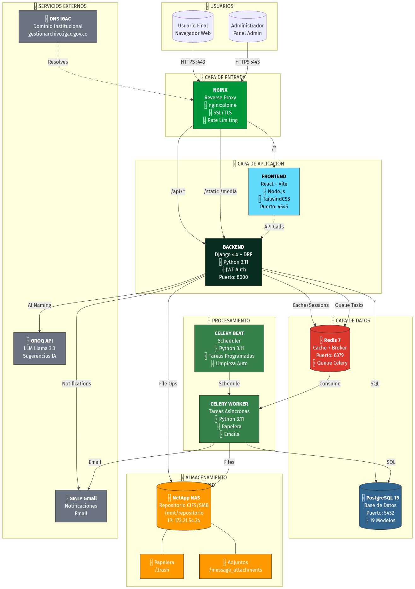

| Campo | Valor |
|---|---|
| Versión del Documento | 1.0.0 |
| Fecha de Elaboración | Enero 2025 |
| Dependencia | Dirección de Gestión Catastral |
| Dominio de Producción | gestionarchivo.igac.gov.co |
| Clasificación | Documento Técnico Interno |
| Versión | Fecha | Autor | Descripción |
|---|---|---|---|
| 1.0.0 | 2025-01-07 | DGC - Sistemas | Versión inicial del manual técnico |
Este manual técnico tiene como objetivo proporcionar una guía completa y detallada del Sistema de Gestión de Archivos NetApp desarrollado para el Instituto Geográfico Agustín Codazzi (IGAC). El documento está dirigido a:
El Sistema de Gestión de Archivos NetApp es una aplicación web empresarial que centraliza el acceso y gestión de archivos almacenados en un servidor NAS NetApp mediante protocolo CIFS/SMB.
| Módulo | Descripción |
|---|---|
| Explorador de Archivos | Navegación, búsqueda, filtros, vistas múltiples |
| Operaciones de Archivos | Subida, descarga, renombrado, copia, movimiento |
| Sistema de Permisos | Control granular por usuario, ruta y herencia |
| Smart Naming | Validación IGAC + sugerencias con IA (GROQ) |
| Diccionario | Términos y abreviaciones oficiales IGAC |
| Favoritos | Accesos rápidos personalizados |
| Papelera | Eliminación suave con recuperación |
| Compartir | Enlaces públicos con seguridad |
| Notificaciones | Alertas y mensajería interna |
| Auditoría | Registro completo de operaciones |
| Administración | Gestión de usuarios y configuración |
Para trabajar con este sistema se requiere conocimiento en:
| Símbolo | Significado |
|---|---|
código |
Fragmentos de código o comandos |
| Negrita | Términos importantes |
| Cursiva | Nombres de archivos o rutas |
| ⚠️ | Advertencia importante |
| ℹ️ | Información adicional |
| ✅ | Paso completado o recomendación |
| Término | Definición |
|---|---|
| NAS | Network Attached Storage - Almacenamiento en red |
| CIFS/SMB | Protocolo de compartición de archivos de Microsoft |
| JWT | JSON Web Token - Sistema de autenticación |
| DRF | Django REST Framework |
| GROQ | API de IA para modelos LLM (Llama 3.3) |
| Celery | Sistema de colas de tareas asíncronas |
| Smart Naming | Sistema de nomenclatura inteligente con IA |
El sistema sigue una arquitectura de microservicios containerizada, con separación clara entre:
┌─────────────────────────────────────────────────────────────────┐
│ USUARIOS │
│ (Navegador Web) │
└─────────────────────────┬───────────────────────────────────────┘
│ HTTPS :443
▼
┌─────────────────────────────────────────────────────────────────┐
│ NGINX │
│ (Reverse Proxy + SSL + Static) │
└──────────┬──────────────────────────────────────┬───────────────┘
│ /api/* │ /*
▼ ▼
┌─────────────────────┐ ┌─────────────────────────┐
│ BACKEND │ │ FRONTEND │
│ Django + DRF │◄──────────────►│ React + Vite │
│ Puerto 8000 │ API Calls │ Puerto 4545 │
└─────────┬───────────┘ └─────────────────────────┘
│
├─────────────┬─────────────┬─────────────┐
▼ ▼ ▼ ▼
┌──────────────┐ ┌──────────────┐ ┌──────────┐ ┌──────────────┐
│ PostgreSQL │ │ Redis │ │ NetApp │ │ GROQ API │
│ Puerto │ │ Puerto │ │ NAS │ │ (IA/LLM) │
│ 5432 │ │ 6379 │ │ CIFS │ │ │
└──────────────┘ └──────┬───────┘ └──────────┘ └──────────────┘
│
▼
┌─────────────────────┐
│ CELERY WORKERS │
│ (Tareas Async) │
└─────────────────────┘
Figura 2.1: Arquitectura General del Sistema
gestionarchivo.igac.gov.co/api/* → Backend Django (puerto 8000)| Tecnología | Versión | Propósito |
|---|---|---|
| Python | 3.11 | Lenguaje principal |
| Django | 4.x | Framework web |
| Django REST Framework | 3.14+ | API REST |
| Celery | 5.x | Tareas asíncronas |
| Gunicorn | 21.x | Servidor WSGI |
| psycopg2 | 2.9+ | Driver PostgreSQL |
| redis-py | 4.x | Cliente Redis |
| PyJWT | 2.x | Tokens JWT |
| Tecnología | Versión | Propósito |
|---|---|---|
| React | 18.x | Biblioteca UI |
| TypeScript | 5.x | Tipado estático |
| Vite | 5.x | Build tool |
| TailwindCSS | 3.x | Estilos |
| Zustand | 4.x | Estado global |
| React Router | 6.x | Enrutamiento |
| Axios | 1.x | Cliente HTTP |
| Lucide React | 0.x | Iconos |
| Tecnología | Versión | Propósito |
|---|---|---|
| Docker | 24.x | Containerización |
| Docker Compose | 2.x | Orquestación |
| Nginx | Alpine | Reverse proxy |
| PostgreSQL | 15 | Base de datos |
| Redis | 7 | Cache/Broker |
| NetApp | - | Almacenamiento NAS |
El sistema cuenta con 19 modelos distribuidos en 8 aplicaciones Django:
| App | Modelos | Descripción |
|---|---|---|
users |
4 | User, UserPermission, UserFavorite, PasswordResetToken |
files |
2 | Directory, DirectoryColor |
audit |
2 | AuditLog, PermissionChangeLog |
dictionary |
2 | DictionaryTerm, AIGeneratedAbbreviation |
groq_stats |
1 | GroqAPIKey |
sharing |
2 | ShareLink, ShareLinkAccess |
trash |
2 | TrashItem, TrashConfig |
notifications |
4 | Notification, MessageThread, Message, MessageAttachment |
Figura 2.2: Diagrama Entidad-Relación Completo
El sistema utiliza Docker Compose v3.8 para orquestar todos los
servicios. El archivo docker-compose.yml define 7
contenedores interconectados.

Figura 3.1: Diagrama de Contenedores Docker
| Servicio | Container Name | Imagen | Puerto |
|---|---|---|---|
| postgres | server_archivo_postgres | postgres:15-alpine | 5433:5432 |
| redis | server_archivo_redis | redis:7-alpine | 6379:6379 |
| backend | server_archivo_backend | ./backend/Dockerfile | 8000:8000 |
| frontend | server_archivo_frontend | ./frontend/Dockerfile | 4545:4545 |
| celery_worker | server_archivo_celery_worker | ./backend/Dockerfile | - |
| celery_beat | server_archivo_celery_beat | ./backend/Dockerfile | - |
| nginx | server_archivo_nginx | nginx:alpine | 80, 443 |
Todos los servicios están conectados a una red bridge llamada
server_archivo_network, lo que permite comunicación interna
por nombre de servicio.
networks:
server_archivo_network:
driver: bridge| Volumen | Propósito | Tamaño Estimado |
|---|---|---|
./postgres_data |
Datos PostgreSQL | 500MB - 2GB |
./redis_data |
Persistencia Redis AOF | 50MB - 500MB |
./backend |
Código Django (desarrollo) | ~50MB |
./frontend |
Código React (desarrollo) | ~200MB |
${NETAPP_BASE_PATH} |
Montaje NAS NetApp | 2TB+ |
postgres:
image: postgres:15-alpine
container_name: server_archivo_postgres
restart: unless-stopped
environment:
POSTGRES_DB: ${POSTGRES_DB}
POSTGRES_USER: ${POSTGRES_USER}
POSTGRES_PASSWORD: ${POSTGRES_PASSWORD}
volumes:
- ./postgres_data:/var/lib/postgresql/data
ports:
- "5433:5432"
healthcheck:
test: ["CMD-SHELL", "pg_isready -U ${POSTGRES_USER}"]
interval: 10s
timeout: 5s
retries: 5| Variable | Descripción | Ejemplo |
|---|---|---|
POSTGRES_DB |
Nombre de la base de datos | gestion_archivo_db |
POSTGRES_USER |
Usuario de PostgreSQL | postgres |
POSTGRES_PASSWORD |
Contraseña (en .env) | ******** |
POSTGRES_HOST |
Host (interno Docker) | postgres |
POSTGRES_PORT |
Puerto interno | 5432 |
POSTGRES_EXTERNAL_PORT |
Puerto externo | 5433 |
| Métrica | Valor |
|---|---|
| Total de Modelos | 19 |
| Total de Tablas | ~25 (incluyendo Django) |
| Relaciones FK | 37 |
| Índices Personalizados | 15+ |
Crear backup:
docker exec server_archivo_postgres pg_dump -U postgres gestion_archivo_db > backup_$(date +%Y%m%d).sqlRestaurar backup:
docker exec -i server_archivo_postgres psql -U postgres gestion_archivo_db < backup_20250107.sql-- postgresql.conf recomendado
shared_buffers = 256MB
effective_cache_size = 768MB
maintenance_work_mem = 128MB
checkpoint_completion_target = 0.9
wal_buffers = 16MB
default_statistics_target = 100
random_page_cost = 1.1
effective_io_concurrency = 200
min_wal_size = 1GB
max_wal_size = 4GB
max_worker_processes = 4
max_parallel_workers_per_gather = 2
max_parallel_workers = 4
max_parallel_maintenance_workers = 2redis:
image: redis:7-alpine
container_name: server_archivo_redis
restart: unless-stopped
command: redis-server --appendonly yes
volumes:
- ./redis_data:/data
ports:
- "6379:6379"
healthcheck:
test: ["CMD", "redis-cli", "ping"]
interval: 10s
timeout: 5s
retries: 5| Uso | Descripción |
|---|---|
| Cache | Cache de consultas frecuentes |
| Sesiones | Almacenamiento de sesiones Django |
| Celery Broker | Cola de mensajes para tareas async |
| Celery Result | Almacenamiento de resultados de tareas |
| Variable | Descripción | Ejemplo |
|---|---|---|
REDIS_HOST |
Host interno | redis |
REDIS_PORT |
Puerto | 6379 |
CELERY_BROKER_URL |
URL del broker | redis://redis:6379/2 |
CELERY_RESULT_BACKEND |
URL de resultados | redis://redis:6379/2 |
Ver estadísticas:
docker exec server_archivo_redis redis-cli INFOVer claves:
docker exec server_archivo_redis redis-cli KEYS "*"Flush cache (solo desarrollo):
docker exec server_archivo_redis redis-cli FLUSHALLEl archivo /nginx/conf.d/production.conf contiene la
configuración completa.
| Función | Descripción |
|---|---|
| Reverse Proxy | Enruta peticiones a backend/frontend |
| SSL Termination | Maneja certificados SSL/TLS |
| Rate Limiting | Protección contra abuso |
| Static Files | Sirve archivos estáticos |
| Security Headers | Headers de seguridad HTTP |
| Zona | Límite | Aplicación |
|---|---|---|
login_limit |
10 req/min | Login, registro, reset password |
api_limit |
50 req/seg | Endpoints API generales |
general_limit |
60 req/seg | Frontend y recursos |
upload_limit |
20 req/seg | Uploads de archivos |
# Rate limiting zones - POR USUARIO (IP real)
limit_req_zone $real_client_ip zone=login_limit:10m rate=10r/m;
limit_req_zone $real_client_ip zone=api_limit:10m rate=50r/s;
limit_req_zone $real_client_ip zone=general_limit:10m rate=60r/s;
limit_req_zone $real_client_ip zone=upload_limit:10m rate=20r/s;
# Connection limiting
limit_conn_zone $real_client_ip zone=addr:10m;add_header X-Frame-Options "DENY" always;
add_header X-Content-Type-Options "nosniff" always;
add_header X-XSS-Protection "1; mode=block" always;
add_header Referrer-Policy "strict-origin-when-cross-origin" always;
server_tokens off; # Ocultar versión de nginx| Ruta | Destino | Descripción |
|---|---|---|
/ |
/app/frontend/dist |
SPA React |
/api/* |
backend:8000 |
API Django |
/admin/* |
backend:8000 |
Admin Django |
/static/* |
/app/static/ |
Estáticos Django |
/media/* |
/app/media/ |
Media files |
proxy_connect_timeout 600s;
proxy_send_timeout 600s;
proxy_read_timeout 600s;
client_max_body_size 2048M; # Para uploads grandesLos certificados se ubican en /nginx/ssl/:
| Archivo | Descripción |
|---|---|
certificate.crt |
Certificado público |
private.key |
Llave privada |
ca_bundle.crt |
Cadena de certificados |
Procesa tareas asíncronas como: - Movimiento de archivos a papelera - Envío de emails - Limpieza de archivos temporales - Procesamiento de uploads grandes
celery_worker:
command: celery -A config worker -l INFO -Q defaultScheduler para tareas programadas:
celery_beat:
command: celery -A config beat -l INFO --scheduler django_celery_beat.schedulers:DatabaseScheduler| Tarea | Frecuencia | Descripción |
|---|---|---|
clean_expired_trash |
Diaria (3:00 AM) | Elimina archivos expirados de papelera |
clean_old_attachments |
Diaria (4:00 AM) | Limpia adjuntos de mensajes >180 días |
check_permission_expiry |
Diaria (6:00 AM) | Notifica permisos por expirar |
cleanup_audit_logs |
Semanal | Limpia logs de auditoría antiguos |
Ver workers activos:
docker exec server_archivo_celery_worker celery -A config inspect activeVer tareas programadas:
docker exec server_archivo_celery_beat celery -A config inspect scheduledEl sistema accede al NAS NetApp mediante protocolo CIFS montado en el host:
# /etc/fstab
//172.21.54.24/DirGesCat /mnt/repositorio cifs credentials=/etc/cifs.credentials,uid=1000,gid=1000 0 0| Variable | Descripción | Ejemplo |
|---|---|---|
NETAPP_BASE_PATH |
Ruta base del repositorio | /mnt/repositorio/2510SP/… |
TRASH_PATH |
Subcarpeta de papelera | 04_bk/bk_temp_subproy/.trash |
MESSAGE_ATTACHMENTS_PATH |
Adjuntos de mensajes | 04_bk/trans_doc_platform/message_attachments |
/mnt/repositorio/
└── 2510SP/
└── H_Informacion_Consulta/
└── Sub_Proy/
├── [Carpetas de proyectos]
└── 04_bk/
├── bk_temp_subproy/
│ └── .trash/ # Papelera de reciclaje
└── trans_doc_platform/
└── message_attachments/ # Adjuntos de mensajes⚠️ Importante: El usuario que ejecuta Docker debe tener permisos de lectura/escritura sobre el montaje NAS.
# Verificar montaje
mount | grep repositorio
# Verificar permisos
ls -la /mnt/repositorio/# ==========================================
# DJANGO CORE
# ==========================================
DEBUG=False
DJANGO_SECRET_KEY=your-super-secret-key-here
ALLOWED_HOSTS=localhost,127.0.0.1,gestionarchivo.igac.gov.co
# ==========================================
# DATABASE
# ==========================================
POSTGRES_DB=gestion_archivo_db
POSTGRES_USER=postgres
POSTGRES_PASSWORD=your-db-password
POSTGRES_HOST=postgres
POSTGRES_PORT=5432
POSTGRES_EXTERNAL_PORT=5433
# ==========================================
# REDIS
# ==========================================
REDIS_HOST=redis
REDIS_PORT=6379
CELERY_BROKER_URL=redis://redis:6379/2
CELERY_RESULT_BACKEND=redis://redis:6379/2
# ==========================================
# JWT
# ==========================================
JWT_SECRET_KEY=your-jwt-secret
JWT_ACCESS_TOKEN_LIFETIME_MINUTES=60
JWT_REFRESH_TOKEN_LIFETIME_DAYS=7
# ==========================================
# EMAIL (Gmail SMTP)
# ==========================================
EMAIL_BACKEND=django.core.mail.backends.smtp.EmailBackend
EMAIL_HOST=smtp.gmail.com
EMAIL_PORT=587
EMAIL_USE_TLS=True
EMAIL_HOST_USER=your-email@gmail.com
EMAIL_HOST_PASSWORD=your-app-password
DEFAULT_FROM_EMAIL=Sistema IGAC <noreply@igac.gov.co>
# ==========================================
# GROQ AI
# ==========================================
GROQ_API_KEYS=key1,key2,key3
GROQ_MODEL=llama-3.3-70b-versatile
GROQ_MAX_TOKENS=1000
GROQ_TEMPERATURE=0.3
# ==========================================
# STORAGE
# ==========================================
NETAPP_BASE_PATH=/mnt/repositorio/2510SP/H_Informacion_Consulta/Sub_Proy
# ==========================================
# PAPELERA
# ==========================================
TRASH_ENABLED=True
TRASH_PATH=04_bk/bk_temp_subproy/.trash
TRASH_MAX_SIZE_GB=5
TRASH_RETENTION_DAYS=30
# ==========================================
# MENSAJERÍA
# ==========================================
MESSAGE_ATTACHMENTS_PATH=04_bk/trans_doc_platform/message_attachments
MESSAGE_ATTACHMENTS_RETENTION_DAYS=180
# ==========================================
# UPLOADS
# ==========================================
MAX_UPLOAD_SIZE_MB=500
MAX_PATH_LENGTH=260
CLIENT_MAX_BODY_SIZE=2048M
# ==========================================
# AUDITORÍA
# ==========================================
AUDIT_LOG_RETENTION_DAYS=365
# ==========================================
# FRONTEND
# ==========================================
VITE_API_URL=http://localhost:8000/api
VITE_DEV_PORT=4545
BACKEND_PORT=8000
# ==========================================
# NGINX
# ==========================================
DOMAIN=gestionarchivo.igac.gov.co
NGINX_MODE=production
HTTP_PORT=80
HTTPS_PORT=443
# ==========================================
# CORS
# ==========================================
CORS_ALLOWED_ORIGINS=http://localhost:4545,https://gestionarchivo.igac.gov.co
# ==========================================
# LOGGING
# ==========================================
LOG_LEVEL=INFO# Iniciar todo
docker-compose up -d
# Iniciar servicio específico
docker-compose up -d backend
# Ver logs
docker-compose logs -f backend# Detener todo
docker-compose down
# Detener con eliminación de volúmenes (¡CUIDADO!)
docker-compose down -v# Reiniciar todo
docker-compose restart
# Reiniciar servicio específico
docker-compose restart backend# Migraciones
docker-compose exec backend python manage.py migrate
# Crear superusuario
docker-compose exec backend python manage.py createsuperuser
# Shell Django
docker-compose exec backend python manage.py shell
# Recolectar estáticos
docker-compose exec backend python manage.py collectstatic --noinput# Rebuild sin cache
docker-compose build --no-cache
# Rebuild y reiniciar
docker-compose up -d --buildhealthcheck:
test: ["CMD-SHELL", "pg_isready -U ${POSTGRES_USER}"]
interval: 10s
timeout: 5s
retries: 5healthcheck:
test: ["CMD", "redis-cli", "ping"]
interval: 10s
timeout: 5s
retries: 5# Ver estado de todos los contenedores
docker-compose ps
# Ver healthcheck específico
docker inspect --format='{{.State.Health.Status}}' server_archivo_postgres# Ver logs del contenedor
docker-compose logs backend
# Ver eventos
docker events --filter container=server_archivo_backend# Verificar que postgres esté corriendo
docker-compose ps postgres
# Probar conexión
docker exec server_archivo_postgres pg_isready -U postgres# Ping a Redis
docker exec server_archivo_redis redis-cli ping
# Ver info de memoria
docker exec server_archivo_redis redis-cli INFO memory# Ver workers activos
docker exec server_archivo_celery_worker celery -A config inspect active
# Ver cola de tareas
docker exec server_archivo_celery_worker celery -A config inspect reserved# Verificar montaje en el host
mount | grep repositorio
# Verificar permisos
ls -la /mnt/repositorio/
# Remontar si es necesario
sudo mount -abackend/
├── config/ # Configuración principal Django
│ ├── __init__.py
│ ├── settings.py # Configuración general
│ ├── urls.py # URLs principales
│ ├── celery.py # Configuración Celery
│ ├── middleware.py # Middleware personalizado
│ └── wsgi.py
├── users/ # App de usuarios y permisos
│ ├── models.py # User, UserPermission, UserFavorite
│ ├── views.py # ViewSets de autenticación
│ ├── views_admin.py # ViewSets de administración
│ ├── serializers.py # Serializers de usuario
│ ├── middleware.py # Middleware de expiración de permisos
│ └── permissions.py # Clases de permisos personalizados
├── files/ # App de operaciones de archivos
│ ├── models.py # Directory, DirectoryColor
│ ├── views.py # FileViewSet (browse, upload, download)
│ └── serializers.py
├── audit/ # App de auditoría
│ ├── models.py # AuditLog, PermissionChangeLog
│ ├── views.py # AuditLogViewSet
│ ├── middleware.py # Middleware de auditoría
│ └── signals.py # Señales para registro automático
├── dictionary/ # App de diccionario IGAC
│ ├── models.py # DictionaryTerm, AIGeneratedAbbreviation
│ ├── views.py # DictionaryViewSet
│ └── management/ # Comandos de gestión
├── groq_stats/ # App de estadísticas GROQ
│ ├── models.py # GroqAPIKey
│ └── views.py # GroqStatsViewSet
├── sharing/ # App de compartir archivos
│ ├── models.py # ShareLink, ShareLinkAccess
│ └── views.py # ShareLinkViewSet
├── trash/ # App de papelera
│ ├── models.py # TrashItem, TrashConfig
│ ├── views.py # TrashViewSet
│ └── tasks.py # Tareas Celery
├── notifications/ # App de notificaciones
│ ├── models.py # Notification, MessageThread, Message
│ └── views.py # NotificationViewSet
├── services/ # Servicios compartidos
│ ├── smb_service.py # Servicio de acceso a NAS
│ ├── smart_naming.py # Servicio de nomenclatura inteligente
│ └── groq_service.py # Servicio de IA GROQ
├── manage.py
├── requirements.txt
└── DockerfileINSTALLED_APPS = [
# Django Core
'django.contrib.admin',
'django.contrib.auth',
'django.contrib.contenttypes',
'django.contrib.sessions',
'django.contrib.messages',
'django.contrib.staticfiles',
# Third Party
'rest_framework',
'rest_framework_simplejwt',
'corsheaders',
'django_filters',
'django_celery_beat',
# Apps Locales
'users.apps.UsersConfig',
'files.apps.FilesConfig',
'audit.apps.AuditConfig',
'dictionary.apps.DictionaryConfig',
'groq_stats.apps.GroqStatsConfig',
'sharing.apps.SharingConfig',
'trash.apps.TrashConfig',
'notifications.apps.NotificationsConfig',
]REST_FRAMEWORK = {
'DEFAULT_AUTHENTICATION_CLASSES': [
'rest_framework_simplejwt.authentication.JWTAuthentication',
],
'DEFAULT_PERMISSION_CLASSES': [
'rest_framework.permissions.IsAuthenticated',
],
'DEFAULT_PAGINATION_CLASS': 'rest_framework.pagination.PageNumberPagination',
'PAGE_SIZE': 50,
'DEFAULT_FILTER_BACKENDS': [
'django_filters.rest_framework.DjangoFilterBackend',
'rest_framework.filters.SearchFilter',
'rest_framework.filters.OrderingFilter',
],
}from datetime import timedelta
SIMPLE_JWT = {
'ACCESS_TOKEN_LIFETIME': timedelta(minutes=60),
'REFRESH_TOKEN_LIFETIME': timedelta(days=7),
'ROTATE_REFRESH_TOKENS': True,
'BLACKLIST_AFTER_ROTATION': True,
'ALGORITHM': 'HS256',
'SIGNING_KEY': env('JWT_SECRET_KEY'),
'AUTH_HEADER_TYPES': ('Bearer',),
}MIDDLEWARE = [
'django.middleware.security.SecurityMiddleware',
'corsheaders.middleware.CorsMiddleware',
'django.contrib.sessions.middleware.SessionMiddleware',
'django.middleware.common.CommonMiddleware',
'django.middleware.csrf.CsrfViewMiddleware',
'django.contrib.auth.middleware.AuthenticationMiddleware',
'users.middleware.PermissionExpirationMiddleware', # Expiración de permisos
'django.contrib.messages.middleware.MessageMiddleware',
'django.middleware.clickjacking.XFrameOptionsMiddleware',
'config.middleware.SecurityHeadersMiddleware', # Headers de seguridad
'audit.middleware.AuditMiddleware', # Auditoría automática
]El sistema utiliza un modelo de usuario personalizado que extiende
AbstractUser:
class User(AbstractUser):
"""
Modelo de usuario personalizado con roles y exenciones
"""
ROLE_CHOICES = (
('consultation', 'Consulta'),
('consultation_edit', 'Consulta + Edición'),
('admin', 'Administrador'),
('superadmin', 'Super Administrador'),
)
# Campos base
email = models.EmailField('Email', unique=True)
username = models.CharField('Username', max_length=150, unique=True)
first_name = models.CharField('Nombre', max_length=150)
last_name = models.CharField('Apellido', max_length=150)
# Rol y permisos
role = models.CharField('Rol', max_length=20, choices=ROLE_CHOICES)
phone = models.CharField('Teléfono', max_length=20, blank=True, null=True)
department = models.CharField('Dependencia', max_length=200, blank=True, null=True)
position = models.CharField('Cargo', max_length=200, blank=True, null=True)
# Permisos especiales de diccionario
can_manage_dictionary = models.BooleanField(default=False)
# Exenciones de validación
exempt_from_naming_rules = models.BooleanField(default=False)
exempt_from_path_limit = models.BooleanField(default=False)
exempt_from_name_length = models.BooleanField(default=False)
exemption_reason = models.TextField(blank=True, null=True)
exemption_granted_by = models.ForeignKey('self', null=True, blank=True)
exemption_granted_at = models.DateTimeField(null=True, blank=True)
# Auditoría
created_at = models.DateTimeField(auto_now_add=True)
updated_at = models.DateTimeField(auto_now=True)
created_by = models.ForeignKey('self', null=True, blank=True)
last_login_ip = models.GenericIPAddressField(null=True, blank=True)
USERNAME_FIELD = 'email'
REQUIRED_FIELDS = ['first_name', 'last_name']| Rol | Nivel | Capacidades |
|---|---|---|
consultation |
1 | Solo lectura en rutas asignadas |
consultation_edit |
2 | Lectura + Escritura con validación IGAC |
admin |
3 | Gestión de usuarios + Sin validación IGAC |
superadmin |
4 | Acceso total al sistema |
class UserPermission(models.Model):
"""
Permisos granulares por ruta para cada usuario
"""
EDIT_LEVEL_CHOICES = (
('upload_only', 'Solo subir'),
('upload_own', 'Subir + Eliminar propios'),
('upload_all', 'Subir + Eliminar todos'),
)
INHERITANCE_CHOICES = (
('total', 'Herencia total'),
('blocked', 'Sin herencia'),
('limited_depth', 'Profundidad limitada'),
('partial_write', 'Solo lectura en subdirectorios'),
)
user = models.ForeignKey(User, on_delete=models.CASCADE)
base_path = models.TextField()
group_name = models.CharField(max_length=100, blank=True, null=True)
# Permisos básicos
can_read = models.BooleanField(default=True)
can_write = models.BooleanField(default=False)
can_delete = models.BooleanField(default=False)
can_create_directories = models.BooleanField(default=True)
exempt_from_dictionary = models.BooleanField(default=False)
# Nivel de edición granular
edit_permission_level = models.CharField(max_length=20, choices=EDIT_LEVEL_CHOICES)
# Herencia de permisos
inheritance_mode = models.CharField(max_length=20, choices=INHERITANCE_CHOICES)
blocked_paths = models.JSONField(default=list)
read_only_paths = models.JSONField(default=list)
max_depth = models.PositiveIntegerField(null=True, blank=True)
# Control de vigencia
is_active = models.BooleanField(default=True)
granted_by = models.ForeignKey(User, null=True, related_name='permissions_granted')
granted_at = models.DateTimeField(auto_now_add=True)
expires_at = models.DateTimeField(null=True, blank=True)
revoked_at = models.DateTimeField(null=True, blank=True)
# Notificaciones de expiración
expiration_notified_7days = models.BooleanField(default=False)
expiration_notified_3days = models.BooleanField(default=False)
notes = models.TextField(blank=True, null=True)┌─────────────────────────────────────────────────────────────┐
│ VERIFICACIÓN DE PERMISO │
└─────────────────────────────────────────────────────────────┘
│
▼
┌─────────────────┐
│ ¿Es superadmin? │
└────────┬────────┘
│
┌──────────────┴──────────────┐
│ SÍ │ NO
▼ ▼
┌─────────────────┐ ┌─────────────────────┐
│ ACCESO TOTAL │ │ Buscar permisos │
└─────────────────┘ │ para la ruta │
└──────────┬──────────┘
│
┌─────────────┴─────────────┐
│ ¿Permiso activo │
│ y no expirado? │
└─────────────┬─────────────┘
│
┌──────────────────────┴───────────────────────┐
│ SÍ │ NO
▼ ▼
┌─────────────────────┐ ┌─────────────────┐
│ Verificar herencia │ │ ACCESO DENEGADO │
│ y paths bloqueados │ └─────────────────┘
└──────────┬──────────┘
│
┌──────────┴──────────┐
│ ¿Path bloqueado? │
└──────────┬──────────┘
│
┌─────────────┴─────────────┐
│ SÍ │ NO
▼ ▼
┌─────────────────┐ ┌─────────────────────────┐
│ ACCESO DENEGADO │ │ Retornar nivel de │
└─────────────────┘ │ permiso (read/write/del)│
└─────────────────────────┘El servicio SMB maneja todas las operaciones de archivos contra el NAS NetApp.
| Función | Descripción |
|---|---|
list_directory(path) |
Lista contenido de directorio |
create_directory(path) |
Crea un nuevo directorio |
delete_item(path) |
Mueve item a papelera |
rename_item(old, new) |
Renombra archivo/carpeta |
copy_item(src, dst) |
Copia archivo/carpeta |
move_item(src, dst) |
Mueve archivo/carpeta |
get_file_stream(path) |
Obtiene stream para descarga |
save_uploaded_file(path, file) |
Guarda archivo subido |
class SMBService:
def __init__(self):
self.base_path = settings.NETAPP_BASE_PATH
def list_directory(self, relative_path: str) -> list:
"""
Lista el contenido de un directorio.
Retorna lista de items con metadatos.
"""
full_path = os.path.join(self.base_path, relative_path.lstrip('/'))
if not os.path.exists(full_path):
raise FileNotFoundError(f"Directorio no encontrado: {relative_path}")
items = []
for entry in os.scandir(full_path):
stat_info = entry.stat()
is_dir = entry.is_dir()
# Contar elementos si es directorio
item_count = None
if is_dir:
try:
item_count = len(os.listdir(entry.path))
except (PermissionError, OSError):
item_count = None
items.append({
'name': entry.name,
'path': os.path.join(relative_path, entry.name),
'is_directory': is_dir,
'size': stat_info.st_size if not is_dir else 0,
'modified_date': stat_info.st_mtime,
'created_date': stat_info.st_ctime,
'extension': os.path.splitext(entry.name)[1].lower() if not is_dir else None,
'item_count': item_count,
})
return itemsValida y sugiere nombres de archivos según las 12 reglas IGAC, integrando IA cuando es necesario.
| # | Regla | Ejemplo Incorrecto | Correcto |
|---|---|---|---|
| 1 | Solo caracteres permitidos (a-z, 0-9, _) | archivo@2024.pdf |
archivo_2024.pdf |
| 2 | Sin espacios | mi archivo.pdf |
mi_archivo.pdf |
| 3 | Sin tildes ni ñ | información.pdf |
informacion.pdf |
| 4 | Sin mayúsculas | MiArchivo.PDF |
miarchivo.pdf |
| 5 | Sin caracteres especiales | archivo(v2).pdf |
archivo_v2.pdf |
| 6 | Sin palabras prohibidas | informe_final.pdf |
informe_20240115.pdf |
| 7 | Máximo 50 caracteres | nombre_muy_largo... |
nombre_corto.pdf |
| 8 | Sin guiones bajos consecutivos | archivo__doble.pdf |
archivo_doble.pdf |
| 9 | No empieza/termina con _ | _archivo_.pdf |
archivo.pdf |
| 10 | Fecha formato AAAAMMDD | archivo_15-01-2024.pdf |
archivo_20240115.pdf |
| 11 | Sin vocales dobles (excepto rr, ll) | coordiinadas.pdf |
coordenadas.pdf |
| 12 | Usar abreviaciones del diccionario | proyecto_catastro.pdf |
proy_cat.pdf |
def smart_validate(name: str, current_path: str = None) -> dict:
"""
Valida un nombre de archivo según reglas IGAC.
Returns:
{
'valid': bool,
'errors': list,
'warnings': list,
'formatted_name': str,
'parts_analysis': list,
'needs_ai': bool,
'user_exemptions': dict
}
"""Todos los ViewSets siguen el patrón Django REST Framework:
from rest_framework import viewsets, status
from rest_framework.decorators import action
from rest_framework.response import Response
from rest_framework.permissions import IsAuthenticated
class FileViewSet(viewsets.ViewSet):
permission_classes = [IsAuthenticated]
def list(self, request):
"""GET /api/files/"""
pass
@action(detail=False, methods=['get'])
def browse(self, request):
"""GET /api/file-ops/browse?path=/"""
pass
@action(detail=False, methods=['post'])
def upload(self, request):
"""POST /api/file-ops/upload"""
pass| ViewSet | Base URL | Descripción |
|---|---|---|
AuthViewSet |
/api/auth/ |
Autenticación (login, logout, me) |
UserViewSet |
/api/users/ |
CRUD de usuarios |
UserPermissionViewSet |
/api/permissions/ |
CRUD de permisos |
FileViewSet |
/api/file-ops/ |
Operaciones de archivos |
DictionaryViewSet |
/api/dictionary/ |
Gestión del diccionario |
AuditLogViewSet |
/api/audit/ |
Logs de auditoría |
ShareLinkViewSet |
/api/sharing/ |
Enlaces compartidos |
TrashViewSet |
/api/trash/ |
Papelera de reciclaje |
NotificationViewSet |
/api/notifications/ |
Notificaciones |
class UserSerializer(serializers.ModelSerializer):
full_name = serializers.CharField(source='get_full_name', read_only=True)
permissions_count = serializers.SerializerMethodField()
naming_exemptions = serializers.SerializerMethodField()
class Meta:
model = User
fields = [
'id', 'email', 'username', 'first_name', 'last_name',
'full_name', 'role', 'phone', 'department', 'position',
'is_active', 'can_manage_dictionary',
'exempt_from_naming_rules', 'exempt_from_path_limit',
'exempt_from_name_length', 'naming_exemptions',
'permissions_count', 'created_at', 'last_login'
]
def get_permissions_count(self, obj):
return obj.userpermission_set.filter(is_active=True).count()
def get_naming_exemptions(self, obj):
return {
'exempt_from_naming_rules': obj.exempt_from_naming_rules,
'exempt_from_path_limit': obj.exempt_from_path_limit,
'exempt_from_name_length': obj.exempt_from_name_length,
'is_privileged_role': obj.role in ['admin', 'superadmin']
}Registra automáticamente todas las operaciones de archivos:
class AuditMiddleware:
def __init__(self, get_response):
self.get_response = get_response
def __call__(self, request):
response = self.get_response(request)
# Solo registrar operaciones de archivos exitosas
if request.path.startswith('/api/file-ops/') and response.status_code < 400:
self._log_operation(request, response)
return response
def _log_operation(self, request, response):
from audit.models import AuditLog
action_map = {
'upload': 'upload',
'download': 'download',
'delete': 'delete',
'rename': 'rename',
# ...
}
# Crear registro de auditoríaVerifica y desactiva permisos expirados:
class PermissionExpirationMiddleware:
def __init__(self, get_response):
self.get_response = get_response
def __call__(self, request):
if request.user.is_authenticated:
# Desactivar permisos expirados del usuario
UserPermission.objects.filter(
user=request.user,
is_active=True,
expires_at__lt=timezone.now()
).update(is_active=False, revoked_at=timezone.now())
return self.get_response(request)# audit/signals.py
from django.db.models.signals import post_save, post_delete
from django.dispatch import receiver
from users.models import UserPermission
from .models import PermissionChangeLog
@receiver(post_save, sender=UserPermission)
def log_permission_change(sender, instance, created, **kwargs):
"""Registra cambios en permisos"""
PermissionChangeLog.objects.create(
permission=instance,
action='created' if created else 'updated',
changed_by=get_current_user(),
old_values=get_old_values(),
new_values=get_new_values(instance)
)# trash/tasks.py
from celery import shared_task
from django.utils import timezone
from datetime import timedelta
@shared_task
def clean_expired_trash_items():
"""
Elimina permanentemente items de papelera
que hayan expirado (>30 días por defecto).
"""
from .models import TrashItem, TrashConfig
config = TrashConfig.get_config()
expiry_date = timezone.now() - timedelta(days=config.retention_days)
expired_items = TrashItem.objects.filter(
deleted_at__lt=expiry_date
)
for item in expired_items:
item.permanent_delete()
return f"Eliminados {expired_items.count()} items expirados"# config/celery.py
from celery.schedules import crontab
app.conf.beat_schedule = {
'clean-expired-trash': {
'task': 'trash.tasks.clean_expired_trash_items',
'schedule': crontab(hour=3, minute=0), # 3:00 AM diario
},
'check-permission-expiry': {
'task': 'users.tasks.check_permission_expiry',
'schedule': crontab(hour=6, minute=0), # 6:00 AM diario
},
'clean-old-attachments': {
'task': 'notifications.tasks.clean_old_attachments',
'schedule': crontab(hour=4, minute=0), # 4:00 AM diario
},
}# config/exceptions.py
from rest_framework.exceptions import APIException
class PermissionDeniedError(APIException):
status_code = 403
default_detail = 'No tiene permisos para esta operación'
default_code = 'permission_denied'
class PathNotFoundError(APIException):
status_code = 404
default_detail = 'Ruta no encontrada'
default_code = 'path_not_found'
class NamingValidationError(APIException):
status_code = 400
default_detail = 'El nombre no cumple con las reglas IGAC'
default_code = 'naming_validation_error'# config/exception_handler.py
from rest_framework.views import exception_handler
def custom_exception_handler(exc, context):
response = exception_handler(exc, context)
if response is not None:
response.data['success'] = False
response.data['error_code'] = getattr(exc, 'default_code', 'error')
return responseEl frontend es una Single Page Application (SPA) construida con tecnologías modernas que proporciona una interfaz de usuario rica y responsiva.
| Tecnología | Versión | Propósito |
|---|---|---|
| React | 19.2.0 | Biblioteca UI principal |
| TypeScript | 5.9.3 | Tipado estático |
| Vite | 7.2.2 | Build tool y dev server |
| TailwindCSS | 4.1.17 | Framework CSS utility-first |
| Zustand | 5.0.8 | Estado global |
| React Router DOM | 7.9.6 | Enrutamiento SPA |
| Axios | 1.13.2 | Cliente HTTP |
| Lucide React | 0.553.0 | Iconografía |
| JSZip | 3.10.1 | Compresión de archivos |
| docx | 9.5.1 | Generación de documentos Word |
frontend/
├── src/
│ ├── api/ # Clientes API
│ │ ├── client.ts # Axios instance configurado
│ │ ├── auth.ts # Endpoints de autenticación
│ │ ├── files.ts # Operaciones de archivos
│ │ ├── fileOps.ts # Operaciones avanzadas
│ │ ├── users.ts # Gestión de usuarios
│ │ ├── admin.ts # Endpoints administrativos
│ │ ├── audit.ts # Auditoría
│ │ ├── notifications.ts # Notificaciones y mensajes
│ │ ├── favorites.ts # Favoritos
│ │ ├── trash.ts # Papelera
│ │ ├── sharing.ts # Compartir enlaces
│ │ ├── stats.ts # Estadísticas
│ │ ├── groqStats.ts # Estadísticas GROQ
│ │ ├── aiAbbreviations.ts # Abreviaciones IA
│ │ └── directoryColors.ts # Colores de carpetas
│ │
│ ├── components/ # Componentes reutilizables
│ │ ├── Layout.tsx # Layout principal
│ │ ├── FileList.tsx # Lista de archivos
│ │ ├── FileTreeView.tsx # Vista de árbol
│ │ ├── Breadcrumbs.tsx # Navegación breadcrumb
│ │ ├── FilterPanel.tsx # Panel de filtros
│ │ ├── NotificationBell.tsx # Campana de notificaciones
│ │ ├── AISystemWidget.tsx # Widget estado IA
│ │ ├── RenameModal.tsx # Modal de renombrado
│ │ ├── UploadModal.tsx # Modal de subida
│ │ ├── ShareLinkModal.tsx # Modal compartir
│ │ ├── admin/ # Componentes admin
│ │ ├── dictionary/ # Componentes diccionario
│ │ └── ui/ # Componentes UI base
│ │
│ ├── pages/ # Páginas/Vistas
│ │ ├── Dashboard.tsx # Inicio
│ │ ├── FileExplorer.tsx # Explorador de archivos
│ │ ├── Search.tsx # Búsqueda global
│ │ ├── Favorites.tsx # Favoritos
│ │ ├── Notifications.tsx # Notificaciones
│ │ ├── Messages.tsx # Mensajería
│ │ ├── Login.tsx # Inicio de sesión
│ │ ├── Administration.tsx # Administración
│ │ ├── Users.tsx # Gestión usuarios
│ │ ├── Audit.tsx # Auditoría
│ │ ├── Statistics.tsx # Estadísticas
│ │ ├── Trash.tsx # Papelera
│ │ └── ... # Otras páginas
│ │
│ ├── store/ # Estado global (Zustand)
│ │ ├── authStore.ts # Estado de autenticación
│ │ ├── notificationStore.ts # Estado de notificaciones
│ │ └── clipboardStore.ts # Portapapeles virtual
│ │
│ ├── hooks/ # Custom hooks
│ │ ├── useModal.tsx # Gestión de modales
│ │ ├── useToast.ts # Notificaciones toast
│ │ ├── useFileSort.ts # Ordenamiento de archivos
│ │ ├── useTreeData.ts # Datos para vista árbol
│ │ ├── useDirectoryColors.ts # Colores de directorios
│ │ ├── usePathPermissions.ts # Permisos por ruta
│ │ └── useClipboardWithConflicts.ts # Portapapeles avanzado
│ │
│ ├── contexts/ # React Contexts
│ │ └── ThemeContext.tsx # Tema claro/oscuro
│ │
│ ├── types/ # Definiciones TypeScript
│ │ ├── index.ts # Exportaciones
│ │ ├── api.ts # Tipos de API
│ │ ├── file.ts # Tipos de archivos
│ │ ├── user.ts # Tipos de usuario
│ │ └── stats.ts # Tipos de estadísticas
│ │
│ ├── utils/ # Utilidades
│ │ ├── formatSize.ts # Formateo de tamaños
│ │ ├── formatDate.ts # Formateo de fechas
│ │ ├── roleUtils.ts # Utilidades de roles
│ │ └── security.ts # Sanitización
│ │
│ ├── App.tsx # Componente raíz
│ └── main.tsx # Punto de entrada
│
├── package.json
├── vite.config.ts
├── tailwind.config.js
└── tsconfig.jsonEl sistema utiliza React Router DOM v7 con protección de rutas basada en roles.
// App.tsx - Componentes de protección
// Rutas públicas (sin autenticación)
const PublicRoute = ({ children }) => {
// Login, recuperar contraseña, enlaces compartidos
};
// Rutas protegidas (requiere autenticación)
const ProtectedRoute = ({ children }) => {
const { isAuthenticated } = useAuthStore();
if (!isAuthenticated) return <Navigate to="/login" />;
return children;
};
// Rutas de Admin (admin y superadmin)
const AdminRoute = ({ children }) => {
const { user } = useAuthStore();
if (user?.role !== 'admin' && user?.role !== 'superadmin') {
return <Navigate to="/dashboard" />;
}
return children;
};
// Rutas de SuperAdmin (solo superadmin)
const SuperAdminRoute = ({ children }) => {
const { user } = useAuthStore();
if (user?.role !== 'superadmin') {
return <Navigate to="/dashboard" />;
}
return children;
};| Ruta | Componente | Protección | Descripción |
|---|---|---|---|
/login |
Login | Pública | Inicio de sesión |
/recuperar-contrasena |
ForgotPassword | Pública | Recuperar contraseña |
/resetear-contrasena |
ResetPassword | Pública | Resetear contraseña |
/share/:token |
PublicShare | Pública | Enlace compartido público |
/dashboard |
Dashboard | Protegida | Página de inicio |
/explorar |
FileExplorer | Protegida | Explorador de archivos |
/buscar |
Search | Protegida | Búsqueda global |
/favoritos |
Favorites | Protegida | Directorios favoritos |
/notifications |
Notifications | Protegida | Notificaciones |
/mensajes |
Messages | Protegida | Mensajería interna |
/mis-permisos |
MyPermissions | Protegida | Ver permisos propios |
/ayuda-renombramiento |
NamingHelp | Protegida | Asistente de nombres |
/diccionario |
DictionaryManagement | Protegida | Diccionario IGAC |
/usuarios |
Users | Admin | Gestión de usuarios |
/estadisticas |
Statistics | Admin | Estadísticas de uso |
/auditoria |
Audit | Admin | Logs de auditoría |
/administracion |
Administration | SuperAdmin | Panel de admin |
/links-compartidos |
ShareLinks | SuperAdmin | Gestión de enlaces |
/papelera |
Trash | SuperAdmin | Papelera de reciclaje |
┌─────────────────────────────────────────────────────────────────────────┐
│ FRONTEND REACT │
├─────────────────────────────────────────────────────────────────────────┤
│ │
│ ┌─────────────────────────────────────────────────────────────────┐ │
│ │ App.tsx │ │
│ │ ┌─────────────┐ ┌─────────────┐ ┌─────────────────────────┐ │ │
│ │ │ThemeProvider│ │BrowserRouter│ │ ModalProvider │ │ │
│ │ └─────────────┘ └─────────────┘ └─────────────────────────┘ │ │
│ └─────────────────────────────────────────────────────────────────┘ │
│ │ │
│ ▼ │
│ ┌─────────────────────────────────────────────────────────────────┐ │
│ │ Routes │ │
│ │ ┌──────────┐ ┌──────────┐ ┌──────────┐ ┌──────────────────┐ │ │
│ │ │ Public │ │Protected │ │ Admin │ │ SuperAdmin │ │ │
│ │ │ Routes │ │ Routes │ │ Routes │ │ Routes │ │ │
│ │ └──────────┘ └──────────┘ └──────────┘ └──────────────────┘ │ │
│ └─────────────────────────────────────────────────────────────────┘ │
│ │ │
│ ┌────────────────────────┼────────────────────────┐ │
│ ▼ ▼ ▼ │
│ ┌─────────────────┐ ┌─────────────────┐ ┌─────────────────┐ │
│ │ Layout │ │ Pages │ │ Components │ │
│ │ ┌───────────┐ │ │ ┌───────────┐ │ │ ┌───────────┐ │ │
│ │ │ Header │ │ │ │ Dashboard │ │ │ │ FileList │ │ │
│ │ ├───────────┤ │ │ ├───────────┤ │ │ ├───────────┤ │ │
│ │ │ Sidebar │ │ │ │FileExplorer│ │ │ │ TreeView │ │ │
│ │ ├───────────┤ │ │ ├───────────┤ │ │ ├───────────┤ │ │
│ │ │ Main │ │ │ │ Search │ │ │ │ Modals │ │ │
│ │ └───────────┘ │ │ └───────────┘ │ │ └───────────┘ │ │
│ └─────────────────┘ └─────────────────┘ └─────────────────┘ │
│ │ │
│ ┌────────────────────────┼────────────────────────┐ │
│ ▼ ▼ ▼ │
│ ┌─────────────────┐ ┌─────────────────┐ ┌─────────────────┐ │
│ │ Zustand │ │ API │ │ Hooks │ │
│ │ Stores │ │ Clients │ │ │ │
│ │ ┌───────────┐ │ │ ┌───────────┐ │ │ ┌───────────┐ │ │
│ │ │ authStore │ │ │ │ client │ │ │ │ useModal │ │ │
│ │ ├───────────┤ │ │ ├───────────┤ │ │ ├───────────┤ │ │
│ │ │notification│ │ │ │ files │ │ │ │ useToast │ │ │
│ │ │ Store │ │ │ ├───────────┤ │ │ ├───────────┤ │ │
│ │ ├───────────┤ │ │ │ auth │ │ │ │useFileSort│ │ │
│ │ │clipboard │ │ │ └───────────┘ │ │ └───────────┘ │ │
│ │ │ Store │ │ │ │ │ │ │
│ │ └───────────┘ │ │ │ │ │ │
│ └─────────────────┘ └─────────────────┘ └─────────────────┘ │
│ │ │
│ ▼ │
│ ┌─────────────────────────────────────────────────────────────────┐ │
│ │ Backend API (/api) │ │
│ └─────────────────────────────────────────────────────────────────┘ │
│ │
└─────────────────────────────────────────────────────────────────────────┘// src/api/client.ts
import axios from 'axios';
const API_BASE_URL = import.meta.env.VITE_API_URL || '/api';
const apiClient = axios.create({
baseURL: API_BASE_URL,
headers: {
'Content-Type': 'application/json',
},
});
// Request interceptor - agrega token JWT
apiClient.interceptors.request.use((config) => {
const publicRoutes = [
'/auth/login',
'/auth/register',
'/auth/request_password_reset',
'/auth/confirm_password_reset'
];
const isPublicRoute = publicRoutes.some(route =>
config.url?.includes(route)
);
if (!isPublicRoute) {
const token = localStorage.getItem('token');
if (token) {
config.headers.Authorization = `Bearer ${token}`;
}
}
return config;
});
// Response interceptor - maneja errores 401
apiClient.interceptors.response.use(
(response) => response,
(error) => {
if (error.response?.status === 401) {
localStorage.removeItem('token');
localStorage.removeItem('user');
window.location.href = '/login';
}
return Promise.reject(error);
}
);| Módulo | Archivo | Endpoints Principales |
|---|---|---|
| Autenticación | auth.ts |
login, logout, register, reset_password |
| Archivos | files.ts |
browse, search, download, upload, delete |
| Operaciones | fileOps.ts |
rename, move, copy, smart_validate |
| Usuarios | users.ts |
list, create, update, delete, permissions |
| Admin | admin.ts |
stats, bulk_permissions, system_config |
| Auditoría | audit.ts |
logs, export, filters |
| Notificaciones | notifications.ts |
list, mark_read, threads, messages |
| Favoritos | favorites.ts |
list, add, remove, reorder |
| Papelera | trash.ts |
list, restore, permanent_delete |
| Compartir | sharing.ts |
create_link, list_links, revoke |
| GROQ Stats | groqStats.ts |
usage, api_keys, stats |
// src/store/authStore.ts
interface AuthState {
user: User | null;
token: string | null;
isAuthenticated: boolean;
setAuth: (user: User, token: string) => void;
logout: () => void;
updateUser: (user: User) => void;
}
export const useAuthStore = create<AuthState>((set) => ({
// Inicializar desde localStorage
user: JSON.parse(localStorage.getItem('user') || 'null'),
token: localStorage.getItem('token'),
isAuthenticated: !!localStorage.getItem('token'),
setAuth: (user, token) => {
localStorage.setItem('token', token);
localStorage.setItem('user', JSON.stringify(user));
set({ user, token, isAuthenticated: true });
},
logout: () => {
localStorage.removeItem('token');
localStorage.removeItem('user');
set({ user: null, token: null, isAuthenticated: false });
},
updateUser: (user) => {
localStorage.setItem('user', JSON.stringify(user));
set({ user });
},
}));// src/store/notificationStore.ts
interface NotificationState {
notifications: Notification[];
unreadCount: number;
unreadByType: Record<NotificationType, number>;
hasUrgent: boolean;
isLoading: boolean;
pollingInterval: number;
isPollingActive: boolean;
// Acciones
fetchNotifications: (forceRefresh?: boolean) => Promise<void>;
fetchUnreadCount: () => Promise<void>;
markAsRead: (notificationId: number) => Promise<void>;
markAllAsRead: () => Promise<void>;
archiveNotification: (notificationId: number) => Promise<void>;
startPolling: () => void;
stopPolling: () => void;
}Características: - Polling automático cada 30 segundos - Cache de 10 segundos para evitar requests excesivos - Conteo separado por tipo de notificación - Indicador de notificaciones urgentes
// src/store/clipboardStore.ts
interface ClipboardState {
items: FileItem[];
operation: 'copy' | 'cut' | null;
sourcePath: string | null;
// Acciones
setClipboard: (items: FileItem[], operation: 'copy' | 'cut', path: string) => void;
clearClipboard: () => void;
hasItems: () => boolean;
}// src/types/user.ts
// Roles del sistema
type UserRole = 'consultation' | 'consultation_edit' | 'admin' | 'superadmin';
// Niveles de permisos de edición
type EditPermissionLevel = 'upload_only' | 'upload_own' | 'upload_all';
// Modos de herencia
type InheritanceMode = 'total' | 'blocked' | 'limited_depth' | 'partial_write';
interface User {
id: number;
username: string;
email: string;
first_name: string;
last_name: string;
full_name: string;
role: UserRole;
phone?: string;
department?: string;
position?: string;
is_active: boolean;
// Exenciones de nombrado
exempt_from_naming_rules?: boolean;
exempt_from_path_limit?: boolean;
exempt_from_name_length?: boolean;
naming_exemptions?: NamingExemptions;
}
interface UserPermission {
id?: number;
user: number;
base_path: string;
can_read: boolean;
can_write: boolean;
can_delete: boolean;
can_create_directories: boolean;
exempt_from_dictionary: boolean;
edit_permission_level?: EditPermissionLevel;
inheritance_mode: InheritanceMode;
blocked_paths: string[];
read_only_paths: string[];
max_depth?: number;
expires_at?: string | null;
}// src/types/file.ts
interface FileItem {
id: number | null;
path: string;
name: string;
extension: string | null;
size: number;
size_formatted: string;
is_directory: boolean;
modified_date: string;
created_date: string;
md5_hash: string | null;
// Propietario
owner_name?: string;
owner_username?: string;
// Permisos individuales
can_write?: boolean;
can_delete?: boolean;
can_rename?: boolean;
read_only_mode?: boolean;
// Conteo de elementos
item_count?: number | null;
}
interface BrowseResponse {
files: FileItem[];
total: number;
page: number;
pages: number;
current_path: string;
breadcrumbs: Breadcrumb[];
available_filters: AvailableFilters;
}// src/api/files.ts
interface PartAnalysis {
type: 'number' | 'date' | 'dictionary' | 'connector' |
'generic' | 'standard_english' | 'proper_name' |
'unknown' | 'unknown_with_suggestion' | 'cadastral_code' | 'empty';
value: string;
meaning?: string;
suggestion?: { key: string; value: string };
source: 'preserved' | 'dictionary' | 'removed' |
'warning' | 'ai_candidate' | 'skip';
}
interface SmartValidateResponse {
success: boolean;
valid: boolean;
errors: string[];
warnings: string[];
original_name: string;
formatted_name: string;
parts_analysis: PartAnalysis[];
unknown_parts: string[];
needs_ai: boolean;
detected_date: string | null;
user_exemptions: UserExemptions;
}
interface SmartRenameResponse {
success: boolean;
original_name: string;
suggested_name: string;
valid: boolean;
errors: string[];
warnings: string[];
used_ai: boolean;
ai_metadata?: Record<string, any>;
parts_analysis: PartAnalysis[];
}// src/hooks/useModal.tsx
interface ModalContextType {
openModal: (component: React.ReactNode) => void;
closeModal: () => void;
isOpen: boolean;
}
export const useModal = () => {
const context = useContext(ModalContext);
return context;
};
// Uso:
const { openModal, closeModal } = useModal();
openModal(<RenameModal file={file} onClose={closeModal} />);// src/hooks/useToast.ts
interface Toast {
id: string;
type: 'success' | 'error' | 'warning' | 'info';
message: string;
duration?: number;
}
export const useToast = () => {
const [toasts, setToasts] = useState<Toast[]>([]);
const addToast = (type, message, duration = 5000) => {
const id = Date.now().toString();
setToasts(prev => [...prev, { id, type, message, duration }]);
setTimeout(() => removeToast(id), duration);
};
return { toasts, success: (m) => addToast('success', m),
error: (m) => addToast('error', m) };
};// src/hooks/useFileSort.ts
type SortField = 'name' | 'size' | 'modified_date' | 'extension';
type SortOrder = 'asc' | 'desc';
export const useFileSort = (files: FileItem[]) => {
const [sortField, setSortField] = useState<SortField>('name');
const [sortOrder, setSortOrder] = useState<SortOrder>('asc');
const sortedFiles = useMemo(() => {
// Siempre directorios primero
const dirs = files.filter(f => f.is_directory);
const regularFiles = files.filter(f => !f.is_directory);
const sortFn = (a, b) => {
// Lógica de ordenamiento según campo
};
return [...dirs.sort(sortFn), ...regularFiles.sort(sortFn)];
}, [files, sortField, sortOrder]);
return { sortedFiles, sortField, sortOrder, setSortField, setSortOrder };
};// src/hooks/usePathPermissions.ts
interface PathPermissions {
can_read: boolean;
can_write: boolean;
can_delete: boolean;
can_create_directories: boolean;
is_loading: boolean;
}
export const usePathPermissions = (path: string): PathPermissions => {
const [permissions, setPermissions] = useState({
can_read: false,
can_write: false,
can_delete: false,
can_create_directories: false,
is_loading: true,
});
useEffect(() => {
const fetchPermissions = async () => {
const result = await adminApi.checkPathPermissions(path);
setPermissions({ ...result, is_loading: false });
};
fetchPermissions();
}, [path]);
return permissions;
};// src/hooks/useDirectoryColors.ts
interface DirectoryColorHook {
colors: Map<string, string>;
setColor: (path: string, color: string) => Promise<void>;
getColor: (path: string) => string | undefined;
removeColor: (path: string) => Promise<void>;
}
export const useDirectoryColors = (): DirectoryColorHook => {
const [colors, setColors] = useState<Map<string, string>>(new Map());
// Cargar colores del servidor
useEffect(() => {
directoryColorsApi.list().then(data => {
const colorMap = new Map(data.map(c => [c.path, c.color]));
setColors(colorMap);
});
}, []);
return { colors, setColor, getColor, removeColor };
};// src/contexts/ThemeContext.tsx
interface ThemeContextType {
isDark: boolean;
toggleTheme: () => void;
}
export const ThemeProvider: React.FC<{ children: ReactNode }> = ({ children }) => {
const [isDark, setIsDark] = useState(() => {
// Verificar preferencia guardada o del sistema
const saved = localStorage.getItem('theme');
if (saved) return saved === 'dark';
return window.matchMedia('(prefers-color-scheme: dark)').matches;
});
useEffect(() => {
// Aplicar clase 'dark' al documento
document.documentElement.classList.toggle('dark', isDark);
localStorage.setItem('theme', isDark ? 'dark' : 'light');
}, [isDark]);
const toggleTheme = () => setIsDark(prev => !prev);
return (
<ThemeContext.Provider value={{ isDark, toggleTheme }}>
{children}
</ThemeContext.Provider>
);
};
// Uso en componentes:
const { isDark, toggleTheme } = useThemeContext();El componente Layout proporciona la estructura base para
todas las páginas protegidas:
Características: - Header fijo con información del usuario - Sidebar colapsable en móviles - Menú dinámico según rol del usuario - Widget de estado del sistema IA - Notificaciones en tiempo real - Toggle de tema claro/oscuro
// Estructura del Layout
<div className="min-h-screen bg-gray-50 dark:bg-gray-900">
<header>
{/* Logo, info usuario, notificaciones, logout */}
</header>
<div className="flex">
<aside>
{/* Menú de navegación */}
{/* Widget AI */}
</aside>
<main>
{children}
</main>
</div>
</div>Componente para mostrar archivos en formato de lista o grilla:
| Prop | Tipo | Descripción |
|---|---|---|
files |
FileItem[] |
Array de archivos a mostrar |
viewMode |
'list' \| 'grid' |
Modo de visualización |
onSelect |
(file: FileItem) => void |
Callback al seleccionar |
onDoubleClick |
(file: FileItem) => void |
Callback al hacer doble clic |
selectedItems |
FileItem[] |
Items seleccionados |
onContextMenu |
(e, file) => void |
Menú contextual |
Navegación jerárquica de directorios con lazy loading:
Características: - Expansión/colapso de nodos - Carga bajo demanda - Indicador de elementos - Colores personalizados - Drag & drop (futuro)
Muestra la ruta actual con enlaces navegables:
// Ejemplo de breadcrumbs
<Breadcrumbs
items={[
{ name: 'Raíz', path: '/' },
{ name: 'Documentos', path: '/Documentos' },
{ name: 'Proyectos', path: '/Documentos/Proyectos' },
]}
onNavigate={(path) => navigateTo(path)}
/>Modal de renombrado con integración Smart Naming:
Funcionalidades: 1. Validación IGAC en tiempo real 2. Sugerencias con IA 3. Análisis de partes del nombre 4. Alertas de errores/advertencias 5. Vista previa del nombre sugerido 6. Búsqueda en diccionario
// src/utils/formatSize.ts
export const formatSize = (bytes: number): string => {
if (bytes === 0) return '0 B';
const k = 1024;
const sizes = ['B', 'KB', 'MB', 'GB', 'TB'];
const i = Math.floor(Math.log(bytes) / Math.log(k));
return `${parseFloat((bytes / Math.pow(k, i)).toFixed(2))} ${sizes[i]}`;
};
// Ejemplos:
formatSize(1024); // "1 KB"
formatSize(1048576); // "1 MB"
formatSize(1073741824); // "1 GB"// src/utils/formatDate.ts
export const formatDate = (date: string | Date): string => {
const d = new Date(date);
return d.toLocaleDateString('es-CO', {
year: 'numeric',
month: '2-digit',
day: '2-digit',
hour: '2-digit',
minute: '2-digit',
});
};
export const formatRelativeDate = (date: string | Date): string => {
const d = new Date(date);
const now = new Date();
const diff = now.getTime() - d.getTime();
if (diff < 60000) return 'Hace un momento';
if (diff < 3600000) return `Hace ${Math.floor(diff/60000)} minutos`;
if (diff < 86400000) return `Hace ${Math.floor(diff/3600000)} horas`;
return formatDate(date);
};// src/utils/roleUtils.ts
export const getRoleLabel = (role: UserRole): string => {
const labels: Record<UserRole, string> = {
consultation: 'Solo Consulta',
consultation_edit: 'Consulta y Edición',
admin: 'Administrador',
superadmin: 'Super Administrador',
};
return labels[role] || role;
};
export const getRoleColor = (role: UserRole): string => {
const colors: Record<UserRole, string> = {
consultation: 'bg-gray-100 text-gray-800',
consultation_edit: 'bg-blue-100 text-blue-800',
admin: 'bg-purple-100 text-purple-800',
superadmin: 'bg-red-100 text-red-800',
};
return colors[role] || 'bg-gray-100 text-gray-800';
};
export const canManageUsers = (role: UserRole): boolean => {
return role === 'admin' || role === 'superadmin';
};
export const canAccessAdmin = (role: UserRole): boolean => {
return role === 'superadmin';
};// src/utils/security.ts
export const sanitizeFilename = (filename: string): string => {
// Remover caracteres peligrosos
return filename
.replace(/[<>:"/\\|?*]/g, '')
.replace(/\.\./g, '')
.trim();
};
export const escapeHtml = (text: string): string => {
const map: Record<string, string> = {
'&': '&',
'<': '<',
'>': '>',
'"': '"',
"'": ''',
};
return text.replace(/[&<>"']/g, m => map[m]);
};// vite.config.ts
import { defineConfig } from 'vite';
import react from '@vitejs/plugin-react';
export default defineConfig({
plugins: [react()],
server: {
port: 4545,
proxy: {
'/api': {
target: 'http://localhost:8000',
changeOrigin: true,
},
},
},
build: {
outDir: 'dist',
sourcemap: false,
rollupOptions: {
output: {
manualChunks: {
vendor: ['react', 'react-dom', 'react-router-dom'],
state: ['zustand', 'axios'],
ui: ['lucide-react'],
},
},
},
},
});// tailwind.config.js
export default {
content: ['./index.html', './src/**/*.{js,ts,jsx,tsx}'],
darkMode: 'class',
theme: {
extend: {
colors: {
primary: {
50: '#f0f9ff',
500: '#0ea5e9',
600: '#0284c7',
700: '#0369a1',
},
},
},
},
plugins: [],
};// tsconfig.json
{
"compilerOptions": {
"target": "ES2020",
"useDefineForClassFields": true,
"lib": ["ES2020", "DOM", "DOM.Iterable"],
"module": "ESNext",
"skipLibCheck": true,
"moduleResolution": "bundler",
"allowImportingTsExtensions": true,
"resolveJsonModule": true,
"isolatedModules": true,
"noEmit": true,
"jsx": "react-jsx",
"strict": true,
"noUnusedLocals": true,
"noUnusedParameters": true,
"noFallthroughCasesInSwitch": true
},
"include": ["src"],
"references": [{ "path": "./tsconfig.node.json" }]
}┌─────────────────────────────────────────────────────────────────┐
│ FLUJO DE DATOS FRONTEND │
└─────────────────────────────────────────────────────────────────┘
Usuario interactúa
│
▼
┌───────────┐
│ Component │ ──────────────────────────────────┐
└─────┬─────┘ │
│ Acción del usuario │
▼ │
┌───────────┐ │
│ Hook │ useModal, useToast, etc. │
└─────┬─────┘ │
│ │
▼ │
┌───────────┐ ┌───────────┐ │
│ Store │◄────►│ API │ │
│ (Zustand) │ │ Client │ │
└─────┬─────┘ └─────┬─────┘ │
│ │ │
│ ▼ │
│ ┌───────────┐ │
│ │ Backend │ │
│ │ Django │ │
│ └─────┬─────┘ │
│ │ │
│ ▼ │
│ ┌───────────┐ │
│ │ Response │ │
│ └─────┬─────┘ │
│ │ │
▼ ▼ │
┌─────────────────────────────┐ │
│ Estado Actualizado │ │
└─────────────┬───────────────┘ │
│ │
▼ │
┌─────────────────────────────┐ │
│ Re-render UI │◄──────────────┘
└─────────────────────────────┘| Categoría | Cantidad | Ejemplos |
|---|---|---|
| Páginas | 19 | Dashboard, FileExplorer, Login, Audit |
| Modales | 18 | RenameModal, UploadModal, ShareLinkModal |
| UI Base | 12 | Layout, Toast, Pagination, Breadcrumbs |
| Archivos | 10 | FileList, FileTreeView, FileIcon, FilterPanel |
| Admin | 11 | UserManagement, PermissionManagement |
| Otros | 12 | AISystemWidget, NotificationBell, CharacterCounter |
| Categoría | Cantidad | Descripción |
|---|---|---|
| API | 14 | Clientes para cada endpoint |
| Hooks | 11 | Custom hooks reutilizables |
| Types | 5 | Definiciones de tipos |
| Store | 3 | Estados globales Zustand |
| Utils | 4 | Funciones de utilidad |
| Config | 2 | Configuraciones |
Figura 4.1: Arquitectura completa del Frontend React
El Explorador de Archivos es el módulo central del sistema, proporcionando una interfaz web completa para navegar, buscar y gestionar archivos almacenados en el NAS NetApp.
| Funcionalidad | Descripción |
|---|---|
| Navegación | Exploración jerárquica de directorios |
| Vistas | Lista, grilla y árbol |
| Búsqueda | Local y global con filtros |
| Filtros | Por extensión, fecha, tamaño |
| Ordenamiento | Por nombre, fecha, tamaño, tipo |
| Operaciones | Subir, descargar, copiar, mover, renombrar, eliminar |
| Selección múltiple | Operaciones en lote |
| Breadcrumbs | Navegación contextual |
| Vista previa | Previsualización de archivos |
┌─────────────────────────────────────────────────────────────────┐
│ EXPLORADOR DE ARCHIVOS │
├─────────────────────────────────────────────────────────────────┤
│ │
│ ┌─────────────────────────────────────────────────────────┐ │
│ │ FileExplorer.tsx │ │
│ │ ┌─────────────┬─────────────┬─────────────────────┐ │ │
│ │ │ Breadcrumbs │ FilterPanel │ ViewModeToggle │ │ │
│ │ └─────────────┴─────────────┴─────────────────────┘ │ │
│ │ │ │
│ │ ┌─────────────────────────────────────────────────┐ │ │
│ │ │ │ │ │
│ │ │ FileList / FileTreeView / GridView │ │ │
│ │ │ │ │ │
│ │ └─────────────────────────────────────────────────┘ │ │
│ │ │ │
│ │ ┌─────────────┬─────────────┬─────────────────────┐ │ │
│ │ │ActionsMenu │ Pagination │ SortDropdown │ │ │
│ │ └─────────────┴─────────────┴─────────────────────┘ │ │
│ └─────────────────────────────────────────────────────────┘ │
│ │ │
│ ▼ │
│ ┌─────────────────────────────────────────────────────────┐ │
│ │ API Layer │ │
│ │ files.ts → /api/file-ops/browse │ │
│ │ fileOps.ts → /api/file-ops/* │ │
│ └─────────────────────────────────────────────────────────┘ │
│ │ │
│ ▼ │
│ ┌─────────────────────────────────────────────────────────┐ │
│ │ Backend │ │
│ │ FileOperationsViewSet → SMBService → NetApp NAS │ │
│ └─────────────────────────────────────────────────────────┘ │
│ │
└─────────────────────────────────────────────────────────────────┘GET /api/file-ops/browseParámetros:
| Parámetro | Tipo | Descripción |
|---|---|---|
path |
string | Ruta relativa al punto de montaje |
page |
int | Número de página (default: 1) |
per_page |
int | Items por página (default: 50, max: 100) |
extension |
string | Filtrar por extensión |
search |
string | Búsqueda en nombres |
show_hidden |
bool | Mostrar archivos ocultos |
Response:
{
"success": true,
"path": "/Documentos/Proyectos",
"items": [
{
"name": "informe_2025.pdf",
"path": "/Documentos/Proyectos/informe_2025.pdf",
"is_directory": false,
"size": 1048576,
"size_formatted": "1 MB",
"modified_date": "2025-01-06T10:30:00",
"extension": "pdf",
"can_write": true,
"can_delete": true,
"can_rename": true
}
],
"total": 45,
"breadcrumbs": [
{"name": "Raíz", "path": "/"},
{"name": "Documentos", "path": "/Documentos"},
{"name": "Proyectos", "path": "/Documentos/Proyectos"}
]
}| Endpoint | Método | Descripción |
|---|---|---|
/api/file-ops/download |
GET | Descargar archivo/ZIP |
/api/file-ops/view |
GET | Ver archivo en navegador |
/api/file-ops/file-details |
GET | Metadatos detallados |
/api/upload/upload |
POST | Subir archivos |
/api/upload/create-folder |
POST | Crear directorio |
/api/file-ops/rename |
POST | Renombrar |
/api/file-ops/copy |
POST | Copiar |
/api/file-ops/move |
POST | Mover |
/api/file-ops/delete |
POST | Eliminar (a papelera) |
/api/file-ops/download-zip |
POST | Descargar múltiples como ZIP |
El SMBService es la capa de abstracción entre Django y
el sistema de archivos NAS.
# services/smb_service.py
class SMBService:
"""Servicio para operaciones con el sistema de archivos NAS"""
def __init__(self):
self.base_path = settings.NAS_MOUNT_PATH # /mnt/netapp
def build_full_path(self, relative_path: str) -> str:
"""Construye la ruta absoluta del sistema de archivos"""
if not relative_path:
return self.base_path
# Sanitizar y unir rutas
clean_path = relative_path.lstrip('/')
return os.path.join(self.base_path, clean_path)
def list_directory(self, path: str) -> List[Dict]:
"""Lista contenidos de un directorio"""
full_path = self.build_full_path(path)
if not os.path.exists(full_path):
raise FileNotFoundError(f"Ruta no encontrada: {path}")
items = []
for entry in os.scandir(full_path):
stat = entry.stat()
items.append({
'name': entry.name,
'path': os.path.join(path, entry.name),
'is_directory': entry.is_dir(),
'size': stat.st_size if not entry.is_dir() else None,
'modified_date': datetime.fromtimestamp(stat.st_mtime),
'created_date': datetime.fromtimestamp(stat.st_ctime),
})
return items
def copy_file(self, src: str, dst: str) -> bool:
"""Copia archivo o directorio"""
src_path = self.build_full_path(src)
dst_path = self.build_full_path(dst)
if os.path.isdir(src_path):
shutil.copytree(src_path, dst_path)
else:
shutil.copy2(src_path, dst_path)
return True
def move_file(self, src: str, dst: str) -> bool:
"""Mueve archivo o directorio"""
src_path = self.build_full_path(src)
dst_path = self.build_full_path(dst)
shutil.move(src_path, dst_path)
return True
def delete_file(self, path: str) -> bool:
"""Elimina archivo o directorio"""
full_path = self.build_full_path(path)
if os.path.isdir(full_path):
shutil.rmtree(full_path)
else:
os.remove(full_path)
return TrueCada operación verifica permisos del usuario antes de ejecutarse:
# services/permission_service.py
class PermissionService:
@staticmethod
def check_path_access(user, path: str, action: str) -> dict:
"""
Verifica si el usuario tiene permiso para la acción en la ruta.
Args:
user: Usuario autenticado
path: Ruta relativa
action: 'read', 'write', 'delete', 'create_dir'
Returns:
dict con 'allowed' y 'reason'
"""
# Superadmin tiene acceso total
if user.role == 'superadmin':
return {'allowed': True, 'reason': 'Superadmin access'}
# Buscar permisos específicos para la ruta
from users.models import UserPermission
permissions = UserPermission.objects.filter(
user=user,
is_active=True
)
for perm in permissions:
if path.startswith(perm.base_path):
# Verificar si la ruta está bloqueada
if any(path.startswith(bp) for bp in perm.blocked_paths):
continue
# Verificar acción específica
if action == 'read' and perm.can_read:
return {'allowed': True, 'reason': 'Read permitted'}
if action == 'write' and perm.can_write:
# Verificar si es ruta de solo lectura
if any(path.startswith(rp) for rp in perm.read_only_paths):
return {'allowed': False, 'reason': 'Read-only path'}
return {'allowed': True, 'reason': 'Write permitted'}
if action == 'delete' and perm.can_delete:
return {'allowed': True, 'reason': 'Delete permitted'}
if action == 'create_dir' and perm.can_create_directories:
return {'allowed': True, 'reason': 'Create directory permitted'}
return {'allowed': False, 'reason': 'No permission found'}┌─────────────────────────────────────────────────────────────────┐
│ FLUJO DE NAVEGACIÓN │
└─────────────────────────────────────────────────────────────────┘
Usuario hace clic en directorio
│
▼
┌─────────────────┐
│ FileExplorer │
│ setCurrentPath()│
└────────┬────────┘
│
▼
┌─────────────────┐
│ filesApi. │
│ browseLive() │
└────────┬────────┘
│ GET /api/file-ops/browse?path=/nueva/ruta
▼
┌─────────────────────────────────────────────────────────┐
│ BACKEND │
├─────────────────────────────────────────────────────────┤
│ │
│ 1. Validar autenticación (JWT) │
│ 2. Verificar permisos de lectura │
│ 3. Construir ruta absoluta │
│ 4. Listar directorio con os.scandir() │
│ 5. Enriquecer con permisos individuales │
│ 6. Generar breadcrumbs │
│ 7. Registrar acceso en auditoría │
│ │
└────────────────────────┬────────────────────────────────┘
│
▼
┌─────────────────────────────────────────────────────────┐
│ RESPONSE │
│ { path, items[], total, breadcrumbs[] } │
└────────────────────────┬────────────────────────────────┘
│
▼
┌─────────────────┐
│ Estado │
│ actualizado │
│ (React state) │
└────────┬────────┘
│
▼
┌─────────────────┐
│ Re-render │
│ FileList/Grid │
└─────────────────┘Componente principal que orquesta la navegación:
// Estructura simplificada
const FileExplorer = () => {
const [currentPath, setCurrentPath] = useState('/');
const [files, setFiles] = useState<FileItem[]>([]);
const [viewMode, setViewMode] = useState<'list' | 'grid' | 'tree'>('list');
const [selectedItems, setSelectedItems] = useState<FileItem[]>([]);
const [filters, setFilters] = useState<FilterState>({});
// Cargar archivos cuando cambia la ruta
useEffect(() => {
loadFiles(currentPath, filters);
}, [currentPath, filters]);
const loadFiles = async (path: string, filters: FilterState) => {
const response = await filesApi.browseLive({ path, ...filters });
if (response.success) {
setFiles(response.data.files);
}
};
// Navegación
const handleNavigate = (path: string) => {
setCurrentPath(path);
setSelectedItems([]);
};
// Doble clic en item
const handleDoubleClick = (item: FileItem) => {
if (item.is_directory) {
handleNavigate(item.path);
} else {
filesApi.viewFile(item.path);
}
};
return (
<Layout>
<div className="flex flex-col h-full">
{/* Header con breadcrumbs y controles */}
<div className="flex items-center justify-between p-4">
<Breadcrumbs items={breadcrumbs} onNavigate={handleNavigate} />
<div className="flex items-center gap-2">
<FilterPanel filters={filters} onChange={setFilters} />
<ViewModeToggle mode={viewMode} onChange={setViewMode} />
<SortDropdown sortField={sortField} onChange={setSortField} />
</div>
</div>
{/* Lista de archivos */}
<div className="flex-1 overflow-auto">
{viewMode === 'list' && (
<FileList
files={sortedFiles}
selectedItems={selectedItems}
onSelect={handleSelect}
onDoubleClick={handleDoubleClick}
onContextMenu={handleContextMenu}
/>
)}
{viewMode === 'tree' && (
<FileTreeView
currentPath={currentPath}
onNavigate={handleNavigate}
/>
)}
</div>
{/* Barra de acciones */}
{selectedItems.length > 0 && (
<ActionsMenu
items={selectedItems}
onCopy={handleCopy}
onMove={handleMove}
onDelete={handleDelete}
onDownload={handleDownload}
/>
)}
</div>
</Layout>
);
};Muestra archivos en formato de lista:
| Columna | Descripción |
|---|---|
| Checkbox | Selección múltiple |
| Icono | Tipo de archivo/carpeta |
| Nombre | Con indicador de color para carpetas |
| Tamaño | Formateado (KB, MB, GB) |
| Fecha modificación | Relativa o absoluta |
| Acciones | Menú contextual |
Vista jerárquica con expansión lazy-load:
// UploadModal.tsx
const UploadModal = ({ currentPath, onClose, onSuccess }) => {
const [files, setFiles] = useState<File[]>([]);
const [uploading, setUploading] = useState(false);
const [progress, setProgress] = useState(0);
const handleUpload = async () => {
setUploading(true);
try {
await filesApi.uploadFiles(currentPath, files);
onSuccess();
onClose();
} catch (error) {
// Manejar error
}
setUploading(false);
};
return (
<Modal>
<DropZone onDrop={setFiles} />
<FileList files={files} onRemove={removeFile} />
<ProgressBar progress={progress} />
<Button onClick={handleUpload} loading={uploading}>
Subir {files.length} archivo(s)
</Button>
</Modal>
);
};# upload/views.py
class UploadViewSet(viewsets.ViewSet):
permission_classes = [IsAuthenticated]
parser_classes = [MultiPartParser, FormParser]
@action(detail=False, methods=['post'])
def upload(self, request):
"""Subir archivos al directorio especificado"""
path = request.data.get('path', '')
files = request.FILES.getlist('files')
if not files:
return Response({'error': 'No hay archivos'}, status=400)
# Verificar permisos de escritura
permission = PermissionService.check_path_access(
request.user, path, 'write'
)
if not permission['allowed']:
return Response({'error': permission['reason']}, status=403)
smb = SMBService()
uploaded = []
errors = []
for file in files:
try:
# Validar nombre con reglas IGAC
validation = smart_naming_service.validate_name(
file.name, path, request.user
)
if not validation['valid']:
# Usar nombre sugerido o rechazar
if validation.get('suggested_name'):
filename = validation['suggested_name']
else:
errors.append({
'file': file.name,
'errors': validation['errors']
})
continue
else:
filename = validation['formatted_name']
# Guardar archivo
dest_path = os.path.join(
smb.build_full_path(path),
filename
)
with open(dest_path, 'wb') as f:
for chunk in file.chunks():
f.write(chunk)
uploaded.append(filename)
# Auditoría
AuditLog.objects.create(
user=request.user,
action='upload',
target_path=os.path.join(path, filename),
file_size=file.size,
success=True
)
except Exception as e:
errors.append({'file': file.name, 'error': str(e)})
return Response({
'success': len(uploaded) > 0,
'uploaded': uploaded,
'errors': errors
})@action(detail=False, methods=['get'])
def download(self, request):
"""Descargar archivo individual"""
path = request.query_params.get('path', '')
# Verificar permisos
permission = PermissionService.check_path_access(
request.user, path, 'read'
)
if not permission['allowed']:
return Response({'error': 'Sin permiso'}, status=403)
smb = SMBService()
full_path = smb.build_full_path(path)
if not os.path.exists(full_path):
return Response({'error': 'Archivo no encontrado'}, status=404)
# Auditoría
AuditLog.objects.create(
user=request.user,
action='download',
target_path=path,
file_size=os.path.getsize(full_path),
success=True
)
# Respuesta de descarga
response = FileResponse(
open(full_path, 'rb'),
as_attachment=True,
filename=os.path.basename(full_path)
)
return response@action(detail=False, methods=['post'], url_path='download-zip')
def download_zip(self, request):
"""Descargar múltiples archivos como ZIP"""
paths = request.data.get('paths', [])
if not paths:
return Response({'error': 'No hay rutas'}, status=400)
smb = SMBService()
# Crear ZIP temporal
temp_file = tempfile.NamedTemporaryFile(delete=True, suffix='.zip')
with zipfile.ZipFile(temp_file, 'w', zipfile.ZIP_DEFLATED) as zf:
for path in paths:
# Verificar permiso para cada archivo
permission = PermissionService.check_path_access(
request.user, path, 'read'
)
if not permission['allowed']:
continue
full_path = smb.build_full_path(path)
if os.path.isfile(full_path):
zf.write(full_path, os.path.basename(full_path))
elif os.path.isdir(full_path):
for root, dirs, files in os.walk(full_path):
for file in files:
file_path = os.path.join(root, file)
arcname = os.path.relpath(file_path, full_path)
zf.write(file_path, arcname)
temp_file.seek(0)
return FileResponse(
temp_file,
content_type='application/zip',
as_attachment=True,
filename='descarga.zip'
)┌─────────────────────────────────────────────────────────────────┐
│ ESTADOS DE UN ARCHIVO │
└─────────────────────────────────────────────────────────────────┘
┌─────────────┐
│ NUEVO │
│ (Upload) │
└──────┬──────┘
│
┌────────────┼────────────┐
▼ ▼ ▼
┌────────────┐ ┌────────────┐ ┌────────────┐
│ ACTIVO │ │ BLOQUEADO │ │ COMPARTIDO │
│ (Normal) │ │ (Sin perm) │ │ (Link) │
└─────┬──────┘ └────────────┘ └─────┬──────┘
│ │
│ ┌─────────────────────────┘
│ │
▼ ▼
┌─────────────┐
│ ELIMINADO │
│ (Papelera) │
└──────┬──────┘
│
┌──────┴──────┐
▼ ▼
┌─────────┐ ┌──────────────┐
│RESTAURADO│ │ ELIMINADO │
│ │ │ PERMANENTE │
└─────────┘ └──────────────┘Path Traversal Prevention
def sanitize_path(path: str) -> str:
# Eliminar ../ y otros intentos de escape
path = os.path.normpath(path)
if '..' in path:
raise SecurityError("Path traversal detected")
return pathValidación de Extensiones
BLOCKED_EXTENSIONS = ['.exe', '.bat', '.cmd', '.ps1', '.vbs']
def validate_extension(filename: str) -> bool:
ext = os.path.splitext(filename)[1].lower()
return ext not in BLOCKED_EXTENSIONSLímites de Tamaño
MAX_FILE_SIZE = 500 * 1024 * 1024 # 500 MB
def validate_size(file) -> bool:
return file.size <= MAX_FILE_SIZEFigura 5.1: Arquitectura del Módulo Explorador de Archivos
Permite a los usuarios marcar directorios como favoritos para acceso rápido desde el Dashboard.
# users/models.py
class UserFavorite(models.Model):
"""Directorio favorito de un usuario"""
user = models.ForeignKey(User, on_delete=models.CASCADE)
path = models.CharField(max_length=1000)
name = models.CharField(max_length=255)
icon = models.CharField(max_length=50, default='folder')
color = models.CharField(max_length=20, default='blue')
position = models.IntegerField(default=0)
created_at = models.DateTimeField(auto_now_add=True)
class Meta:
unique_together = ['user', 'path']
ordering = ['position', 'name']| Endpoint | Método | Descripción |
|---|---|---|
/api/favorites/ |
GET | Listar favoritos del usuario |
/api/favorites/ |
POST | Agregar nuevo favorito |
/api/favorites/{id}/ |
DELETE | Eliminar favorito |
/api/favorites/reorder/ |
POST | Reordenar favoritos |
Usuario hace clic en estrella
│
▼
┌────────────────┐ POST /api/favorites/
│ Toggle │───────────────────────────►┌──────────────┐
│ Favorito │ │ Backend │
└────────────────┘◄───────────────────────────┤ Crear/Delete │
│ └──────────────┘
▼
┌────────────────┐
│ Actualizar │
│ Dashboard │
└────────────────┘Sistema de eliminación “suave” que permite recuperar archivos eliminados durante un período configurable.
# trash/models.py
class TrashItem(models.Model):
"""Item en la papelera de reciclaje"""
STATUS_CHOICES = [
('stored', 'Almacenado'),
('restoring', 'Restaurando'),
('restored', 'Restaurado'),
('deleted', 'Eliminado Permanentemente'),
('failed', 'Error'),
]
trash_id = models.UUIDField(primary_key=True, default=uuid.uuid4)
original_path = models.CharField(max_length=2000)
original_name = models.CharField(max_length=500)
is_directory = models.BooleanField(default=False)
size_bytes = models.BigIntegerField(default=0)
mime_type = models.CharField(max_length=255, null=True)
file_count = models.IntegerField(default=0)
dir_count = models.IntegerField(default=0)
deleted_by = models.ForeignKey(User, on_delete=models.SET_NULL, null=True)
deleted_at = models.DateTimeField(auto_now_add=True)
expires_at = models.DateTimeField()
status = models.CharField(max_length=20, choices=STATUS_CHOICES)
restored_by = models.ForeignKey(User, null=True, on_delete=models.SET_NULL)
restored_at = models.DateTimeField(null=True)
restored_path = models.CharField(max_length=2000, null=True)
class TrashConfig(models.Model):
"""Configuración global de la papelera"""
retention_days = models.IntegerField(default=30)
max_size_gb = models.DecimalField(max_digits=10, decimal_places=2, default=100)
auto_cleanup_enabled = models.BooleanField(default=True)
excluded_extensions = models.JSONField(default=list)| Endpoint | Método | Descripción |
|---|---|---|
/api/trash/ |
GET | Listar items en papelera |
/api/trash/{id}/ |
GET | Detalle de item |
/api/trash/{id}/restore/ |
POST | Restaurar item |
/api/trash/{id}/ |
DELETE | Eliminar permanentemente |
/api/trash/stats/ |
GET | Estadísticas de uso |
/api/trash/cleanup/ |
DELETE | Limpiar expirados |
/api/trash/config/ |
GET/PUT | Configuración |
┌─────────────────────────────────────────────────────────────────┐
│ FLUJO DE ELIMINACIÓN │
└─────────────────────────────────────────────────────────────────┘
Usuario elimina archivo
│
▼
┌────────────────┐
│ Verificar │
│ permisos │
└────────┬───────┘
│
▼
┌────────────────┐
│ Mover a │ Físicamente a /var/trash/{uuid}/
│ papelera │
└────────┬───────┘
│
▼
┌────────────────┐
│ Crear registro │ TrashItem en BD
│ TrashItem │ expires_at = now + retention_days
└────────┬───────┘
│
▼
┌────────────────┐
│ Registrar │ AuditLog.action = 'delete'
│ auditoría │
└────────────────┘
│ Después de retention_days...
▼
┌────────────────┐
│ Celery Beat │ cleanup_expired_trash()
│ (cron diario) │
└────────┬───────┘
│
▼
┌────────────────┐
│ Eliminar │
│ permanente │
└────────────────┘# trash/services.py
class TrashService:
TRASH_BASE_PATH = '/var/trash'
def move_to_trash(self, path: str, user) -> TrashItem:
"""Mueve un archivo/directorio a la papelera"""
smb = SMBService()
full_path = smb.build_full_path(path)
# Generar UUID para el item
trash_id = uuid.uuid4()
trash_path = os.path.join(self.TRASH_BASE_PATH, str(trash_id))
os.makedirs(trash_path, exist_ok=True)
# Si es directorio, comprimir como tar.gz
if os.path.isdir(full_path):
archive_path = os.path.join(trash_path, 'data.tar.gz')
with tarfile.open(archive_path, 'w:gz') as tar:
tar.add(full_path, arcname=os.path.basename(full_path))
# Contar archivos y directorios
file_count, dir_count = self._count_contents(full_path)
else:
# Archivo individual
shutil.copy2(full_path, os.path.join(trash_path, 'data'))
file_count, dir_count = 1, 0
# Calcular tamaño
size_bytes = self._get_size(full_path)
# Crear registro en BD
config = TrashConfig.get_config()
item = TrashItem.objects.create(
trash_id=trash_id,
original_path=path,
original_name=os.path.basename(path),
is_directory=os.path.isdir(full_path),
size_bytes=size_bytes,
file_count=file_count,
dir_count=dir_count,
deleted_by=user,
expires_at=timezone.now() + timedelta(days=config.retention_days),
status='stored'
)
# Eliminar original
if os.path.isdir(full_path):
shutil.rmtree(full_path)
else:
os.remove(full_path)
return item
def restore_from_trash(self, trash_id: str, user, target_path=None) -> dict:
"""Restaura un item desde la papelera"""
item = TrashItem.objects.get(trash_id=trash_id)
if item.status != 'stored':
return {'success': False, 'error': 'Item no disponible'}
# Determinar ruta de restauración
restore_path = target_path or item.original_path
smb = SMBService()
full_restore_path = smb.build_full_path(restore_path)
# Verificar si existe (conflicto)
if os.path.exists(full_restore_path):
# Renombrar con sufijo
base, ext = os.path.splitext(full_restore_path)
counter = 1
while os.path.exists(f"{base}_{counter}{ext}"):
counter += 1
full_restore_path = f"{base}_{counter}{ext}"
# Restaurar
trash_path = os.path.join(self.TRASH_BASE_PATH, str(trash_id))
if item.is_directory:
archive_path = os.path.join(trash_path, 'data.tar.gz')
with tarfile.open(archive_path, 'r:gz') as tar:
tar.extractall(os.path.dirname(full_restore_path))
else:
shutil.copy2(
os.path.join(trash_path, 'data'),
full_restore_path
)
# Actualizar registro
item.status = 'restored'
item.restored_by = user
item.restored_at = timezone.now()
item.restored_path = restore_path
item.save()
# Limpiar papelera
shutil.rmtree(trash_path)
return {
'success': True,
'restored_path': restore_path
}Permite generar enlaces públicos para compartir archivos/directorios con usuarios externos.
# sharing/models.py
class ShareLink(models.Model):
"""Enlace para compartir archivo/directorio"""
PERMISSION_CHOICES = [
('view', 'Solo Ver'),
('download', 'Descargar'),
]
token = models.CharField(max_length=64, unique=True, default=generate_token)
path = models.CharField(max_length=2000)
is_directory = models.BooleanField(default=False)
permission = models.CharField(max_length=20, choices=PERMISSION_CHOICES)
password = models.CharField(max_length=128, null=True, blank=True)
require_email = models.BooleanField(default=False)
allowed_domain = models.CharField(max_length=255, null=True)
max_downloads = models.IntegerField(null=True)
download_count = models.IntegerField(default=0)
access_count = models.IntegerField(default=0)
expires_at = models.DateTimeField(null=True)
is_active = models.BooleanField(default=True)
created_by = models.ForeignKey(User, on_delete=models.CASCADE)
created_at = models.DateTimeField(auto_now_add=True)
# Opcional: enlace a item de papelera
trash_item = models.ForeignKey(TrashItem, null=True, on_delete=models.CASCADE)
@property
def is_valid(self) -> bool:
if not self.is_active:
return False
if self.expires_at and timezone.now() > self.expires_at:
return False
if self.max_downloads and self.download_count >= self.max_downloads:
return False
return True
@property
def full_url(self) -> str:
return f"{settings.SITE_URL}/share/{self.token}"
class ShareLinkAccess(models.Model):
"""Registro de accesos a enlaces compartidos"""
share_link = models.ForeignKey(ShareLink, on_delete=models.CASCADE)
ip_address = models.GenericIPAddressField()
user_agent = models.TextField()
email_provided = models.EmailField(null=True)
action = models.CharField(max_length=20) # view, download, denied
success = models.BooleanField(default=True)
error_message = models.TextField(null=True)
accessed_at = models.DateTimeField(auto_now_add=True)| Endpoint | Método | Acceso | Descripción |
|---|---|---|---|
/api/sharing/ |
GET | SuperAdmin | Listar todos los enlaces |
/api/sharing/create_share/ |
POST | SuperAdmin | Crear enlace |
/api/sharing/{id}/deactivate/ |
POST | SuperAdmin | Desactivar enlace |
/api/sharing/{id}/stats/ |
GET | SuperAdmin | Estadísticas |
/api/shared/access/{token}/ |
GET | Público | Acceder al enlace |
/api/shared/download/{token}/ |
GET | Público | Descargar desde enlace |
┌─────────────────────────────────────────────────────────────────┐
│ FLUJO DE COMPARTIR ARCHIVO │
└─────────────────────────────────────────────────────────────────┘
SuperAdmin crea enlace
│
▼
┌────────────────┐
│ ShareLinkModal │
│ - Ruta │
│ - Permisos │
│ - Contraseña │
│ - Expiración │
│ - Max descargas│
└────────┬───────┘
│
▼
┌────────────────┐ POST /api/sharing/create_share/
│ Crear enlace │─────────────────────────────────────►
└────────┬───────┘
│
▼
┌────────────────┐
│ URL generada: │
│ /share/abc123 │
└────────┬───────┘
│
Copiar y enviar a usuario externo
│
▼
┌────────────────┐
│ Usuario externo│
│ accede al link │
└────────┬───────┘
│
▼
┌────────────────┐
│ Validaciones: │
│ - Token válido │
│ - No expirado │
│ - Contraseña │
│ - Email/Domain │
└────────┬───────┘
│
▼
┌────────────────┐
│ Ver/Descargar │
│ archivo │
└────────────────┘Sistema completo de notificaciones y mensajería interna entre usuarios.
# notifications/models.py
class Notification(models.Model):
"""Notificación individual"""
TYPES = [
('system', 'Sistema'),
('admin_message', 'Mensaje Admin'),
('direct_message', 'Mensaje Directo'),
('file_shared', 'Archivo Compartido'),
('permission_granted', 'Permiso Otorgado'),
('permission_revoked', 'Permiso Revocado'),
]
PRIORITIES = [
('low', 'Baja'),
('normal', 'Normal'),
('high', 'Alta'),
('urgent', 'Urgente'),
]
recipient = models.ForeignKey(User, on_delete=models.CASCADE, related_name='notifications')
sender = models.ForeignKey(User, null=True, on_delete=models.SET_NULL, related_name='sent_notifications')
thread = models.ForeignKey('MessageThread', null=True, on_delete=models.CASCADE)
notification_type = models.CharField(max_length=30, choices=TYPES)
priority = models.CharField(max_length=10, choices=PRIORITIES, default='normal')
title = models.CharField(max_length=255)
message = models.TextField()
action_url = models.CharField(max_length=500, null=True)
is_read = models.BooleanField(default=False)
read_at = models.DateTimeField(null=True)
is_archived = models.BooleanField(default=False)
created_at = models.DateTimeField(auto_now_add=True)
class MessageThread(models.Model):
"""Hilo de conversación entre usuarios"""
TYPES = [
('direct', 'Mensaje Directo'),
('support', 'Ticket de Soporte'),
('announcement', 'Anuncio'),
]
subject = models.CharField(max_length=255)
thread_type = models.CharField(max_length=20, choices=TYPES)
# Participantes (nuevo sistema)
participant_1 = models.ForeignKey(User, on_delete=models.CASCADE, related_name='threads_as_p1')
participant_2 = models.ForeignKey(User, on_delete=models.CASCADE, related_name='threads_as_p2')
# Contadores de no leídos
participant_1_unread = models.IntegerField(default=0)
participant_2_unread = models.IntegerField(default=0)
is_closed = models.BooleanField(default=False)
closed_at = models.DateTimeField(null=True)
closed_by = models.ForeignKey(User, null=True, on_delete=models.SET_NULL)
created_at = models.DateTimeField(auto_now_add=True)
last_message_at = models.DateTimeField(auto_now_add=True)
@classmethod
def get_or_create_direct_thread(cls, user1, user2, subject='Conversación'):
"""Obtiene o crea un hilo entre dos usuarios"""
from django.db.models import Q
# Buscar hilo existente
thread = cls.objects.filter(
Q(participant_1=user1, participant_2=user2) |
Q(participant_1=user2, participant_2=user1),
thread_type='direct'
).first()
if thread:
return thread, False
# Crear nuevo
return cls.objects.create(
subject=subject,
thread_type='direct',
participant_1=user1,
participant_2=user2
), True
class MessageAttachment(models.Model):
"""Archivo adjunto a un mensaje"""
notification = models.ForeignKey(Notification, on_delete=models.CASCADE)
file = models.FileField(upload_to='message_attachments/')
original_filename = models.CharField(max_length=255)
file_type = models.CharField(max_length=20) # image, document, video, audio, other
mime_type = models.CharField(max_length=100)
file_size = models.BigIntegerField()
uploaded_by = models.ForeignKey(User, on_delete=models.CASCADE)
uploaded_at = models.DateTimeField(auto_now_add=True)| Endpoint | Método | Descripción |
|---|---|---|
/api/notifications/ |
GET | Listar notificaciones |
/api/notifications/unread-count/ |
GET | Contador de no leídas |
/api/notifications/{id}/mark-read/ |
POST | Marcar como leída |
/api/notifications/mark-all-read/ |
POST | Marcar todas como leídas |
/api/notifications/threads/ |
GET | Listar conversaciones |
/api/notifications/{id}/thread/ |
GET | Detalle de conversación |
/api/notifications/{id}/reply/ |
POST | Responder en hilo |
/api/notifications/new-message/ |
POST | Nuevo mensaje directo |
/api/notifications/send/ |
POST | Enviar (solo admin) |
┌─────────────────────────────────────────────────────────────────┐
│ FLUJO DE MENSAJERÍA │
└─────────────────────────────────────────────────────────────────┘
Usuario A envía mensaje a Usuario B
│
▼
┌─────────────────┐
│ POST │
│ /new-message/ │
│ recipient_id: B │
│ message: "..." │
└────────┬────────┘
│
▼
┌─────────────────┐
│ Buscar/Crear │
│ MessageThread │
│ entre A y B │
└────────┬────────┘
│
▼
┌─────────────────┐
│ Crear │
│ Notification │
│ para B │
└────────┬────────┘
│
▼
┌─────────────────┐
│ Incrementar │
│ unread_count │
│ de B │
└────────┬────────┘
│
▼
┌─────────────────┐
│ Polling 30s │ Frontend de B detecta
│ fetchUnread() │ nuevo mensaje
└────────┬────────┘
│
▼
┌─────────────────┐
│ Badge rojo │
│ en campanita │
└─────────────────┘// store/notificationStore.ts
export const useNotificationStore = create<NotificationState>((set, get) => ({
unreadCount: 0,
pollingInterval: 30000, // 30 segundos
startPolling: () => {
// Fetch inicial
get().fetchUnreadCount();
// Configurar interval
setInterval(() => {
get().fetchUnreadCount();
}, get().pollingInterval);
},
fetchUnreadCount: async () => {
const response = await notificationsApi.getUnreadCount();
set({
unreadCount: response.unread_count,
hasUrgent: response.has_urgent
});
},
}));Permite personalizar el color de carpetas para organización visual.
# files/models.py
class DirectoryColor(models.Model):
"""Color personalizado para directorio"""
user = models.ForeignKey(User, on_delete=models.CASCADE)
path = models.CharField(max_length=2000)
color = models.CharField(max_length=20)
class Meta:
unique_together = ['user', 'path']const DIRECTORY_COLORS = [
{ name: 'default', value: 'text-yellow-500' },
{ name: 'red', value: 'text-red-500' },
{ name: 'orange', value: 'text-orange-500' },
{ name: 'green', value: 'text-green-500' },
{ name: 'blue', value: 'text-blue-500' },
{ name: 'purple', value: 'text-purple-500' },
{ name: 'pink', value: 'text-pink-500' },
{ name: 'gray', value: 'text-gray-500' },
];// hooks/useDirectoryColors.ts
export const useDirectoryColors = () => {
const [colors, setColors] = useState<Map<string, string>>(new Map());
useEffect(() => {
directoryColorsApi.list().then(data => {
const map = new Map(data.map(c => [c.path, c.color]));
setColors(map);
});
}, []);
const setColor = async (path: string, color: string) => {
await directoryColorsApi.set(path, color);
setColors(prev => new Map(prev).set(path, color));
};
return { colors, setColor, getColor: (p) => colors.get(p) };
};| Módulo | Tablas BD | Endpoints | Permisos |
|---|---|---|---|
| Favoritos | 1 | 4 | Todos los usuarios |
| Papelera | 2 | 9 | Ver: según permisos, Gestionar: SuperAdmin |
| Compartir | 2 | 7 | SuperAdmin |
| Notificaciones | 4 | 15+ | Todos los usuarios |
| Colores | 1 | 3 | Todos los usuarios |
Figura 6.1: Módulos Complementarios del Sistema
El sistema Smart Naming implementa las 12 reglas oficiales de nomenclatura del IGAC para archivos, combinando:
| # | Regla | Ejemplo |
|---|---|---|
| 1 | Todo en minúsculas | Informe.PDF → informe.pdf |
| 2 | Sin tildes/acentos | información → informacion |
| 3 | Sin conectores (a, y, de, entre, etc.) | plan_de_accion → plan_accion |
| 4 | Espacios → guiones bajos | mi archivo → mi_archivo |
| 5 | Sin paréntesis, guiones medios → _ | doc(v2) → doc_v2 |
| 6 | Sin caracteres especiales | @#$% → eliminados |
| 7 | Sin caracteres duplicados consecutivos | coorrecto → corecto |
| 8 | Fecha al INICIO en formato YYYYMMDD | informe_enero → 20250115_informe |
| 9 | Sin palabras genéricas | archivo_final → advertencia |
| 10 | Máximo 65 caracteres en nombre | Truncamiento automático |
| 11 | Sin prefijos como “nuevo_”, “copia_” | copia_doc → doc |
| 12 | Ceros iniciales en secuencias numéricas | v1 → v01 |
┌─────────────────────────────────────────────────────────────────┐
│ SMART NAMING SYSTEM │
├─────────────────────────────────────────────────────────────────┤
│ │
│ ┌─────────────────────────────────────────────────────────┐ │
│ │ SmartNamingService │ │
│ │ │ │
│ │ 1. apply_format_rules() - Reglas 1-7, 11 │ │
│ │ 2. detect_and_format_date() - Regla 8 │ │
│ │ 3. classify_word() - Análisis de partes │ │
│ │ 4. validate_name() - Validación completa │ │
│ │ 5. suggest_name() - Generar sugerencia │ │
│ │ │ │
│ └────────────────────────┬────────────────────────────────┘ │
│ │ │
│ ┌───────────────┼───────────────┐ │
│ ▼ ▼ ▼ │
│ ┌─────────────┐ ┌─────────────┐ ┌─────────────────┐ │
│ │ Dictionary │ │ AI Cache │ │ GROQ API │ │
│ │ Validator │ │ (BD Cache) │ │ (Llama 3.3) │ │
│ │ │ │ │ │ │ │
│ │ ┌─────────┐ │ │ ┌─────────┐ │ │ ┌─────────┐ │ │
│ │ │ Términos│ │ │ │AIGenerat│ │ │ │abbreviate│ │ │
│ │ │ Oficiales│ │ │ │Abbreviat│ │ │ │_words() │ │ │
│ │ └─────────┘ │ │ └─────────┘ │ │ └─────────┘ │ │
│ └─────────────┘ └─────────────┘ └─────────────────┘ │
│ │
└─────────────────────────────────────────────────────────────────┘┌─────────────────────────────────────────────────────────────────┐
│ FLUJO DE SUGERENCIA DE NOMBRE │
└─────────────────────────────────────────────────────────────────┘
Nombre original: "Informe Técnico de Catastro - Abril 2024.PDF"
│
▼
┌─────────────────────────────────────────────────────────────┐
│ 1. SEPARAR EXTENSIÓN │
│ base: "Informe Técnico de Catastro - Abril 2024" │
│ ext: ".pdf" │
└─────────────────────────────────────────────────────────────┘
│
▼
┌─────────────────────────────────────────────────────────────┐
│ 2. APLICAR REGLAS DE FORMATO │
│ - Minúsculas │
│ - Sin tildes │
│ - Espacios → _ │
│ - Guiones → _ │
│ Resultado: "informe_tecnico_de_catastro_abril_2024" │
└─────────────────────────────────────────────────────────────┘
│
▼
┌─────────────────────────────────────────────────────────────┐
│ 3. DETECTAR Y FORMATEAR FECHA │
│ "abril 2024" → "20240415" │
│ texto sin fecha: "informe_tecnico_de_catastro" │
└─────────────────────────────────────────────────────────────┘
│
▼
┌─────────────────────────────────────────────────────────────┐
│ 4. SEPARAR EN PARTES Y CLASIFICAR │
│ │
│ informe → unknown (no en diccionario) │
│ tecnico → unknown (no en diccionario) │
│ de → connector (eliminar) │
│ catastro → unknown (no en diccionario) │
└─────────────────────────────────────────────────────────────┘
│
▼
┌─────────────────────────────────────────────────────────────┐
│ 5. PROCESO DE ABREVIACIÓN │
│ │
│ ¿"informe" en cache? │
│ → SÍ: usar "inf" │
│ → NO: enviar a IA → guardar en cache │
│ │
│ ¿"tecnico" en cache? │
│ → SÍ: usar "tec" │
│ → NO: enviar a IA → guardar en cache │
│ │
│ ¿"catastro" en diccionario? │
│ → SÍ: usar "cat" (abreviación oficial) │
└─────────────────────────────────────────────────────────────┘
│
▼
┌─────────────────────────────────────────────────────────────┐
│ 6. CONSTRUIR NOMBRE FINAL │
│ │
│ fecha + partes abreviadas + extensión │
│ "20240415_inf_tec_cat.pdf" │
└─────────────────────────────────────────────────────────────┘class DictionaryEntry(models.Model):
"""Términos y abreviaciones oficiales IGAC"""
key = models.CharField(
max_length=100,
unique=True,
db_index=True,
help_text='Término o sigla (ej: "igac", "cat", "geo")'
)
value = models.TextField(
help_text='Significado completo (ej: "instituto geográfico agustín codazzi")'
)
is_active = models.BooleanField(default=True)
created_by = models.ForeignKey(User, on_delete=models.SET_NULL, null=True)
created_at = models.DateTimeField(auto_now_add=True)
updated_at = models.DateTimeField(auto_now=True)class AIGeneratedAbbreviation(models.Model):
"""
Cache de abreviaciones generadas por IA.
GARANTIZA CONSISTENCIA: una vez que la IA abrevia una palabra,
todos los usuarios obtienen la misma abreviación.
"""
STATUS_CHOICES = (
('pending', 'Pendiente de revisión'),
('approved', 'Aprobado'),
('rejected', 'Rechazado'),
('corrected', 'Corregido manualmente'),
)
original_word = models.CharField(
max_length=100,
unique=True,
db_index=True,
help_text='Palabra completa normalizada (ej: "prestacion")'
)
abbreviation = models.CharField(
max_length=20,
db_index=True,
help_text='Abreviación generada (ej: "prest")'
)
times_used = models.PositiveIntegerField(default=1)
status = models.CharField(max_length=20, choices=STATUS_CHOICES, default='pending')
# Si fue corregido manualmente
original_ai_abbreviation = models.CharField(max_length=20, null=True)
reviewed_by = models.ForeignKey(User, null=True, on_delete=models.SET_NULL)
reviewed_at = models.DateTimeField(null=True)
@classmethod
def get_or_none(cls, word: str):
"""Busca abreviación cacheada (no usar si está rechazada)"""
normalized = normalize_word(word)
try:
entry = cls.objects.get(original_word=normalized)
if entry.status == 'rejected':
return None
return entry
except cls.DoesNotExist:
return None
@classmethod
def cache_abbreviation(cls, word: str, abbreviation: str):
"""Guarda nueva abreviación o incrementa contador"""
entry, created = cls.objects.get_or_create(
original_word=normalize_word(word),
defaults={'abbreviation': clean_abbreviation(abbreviation)}
)
if not created:
entry.increment_usage()
return entryEl sistema clasifica cada parte del nombre:
| Tipo | Descripción | Acción |
|---|---|---|
number |
Números puros (001, 2024) | Preservar |
cadastral_code |
Códigos catastrales (5+ dígitos) | Preservar |
date |
Fechas detectadas | Mover al inicio |
connector |
Conectores (de, la, y) | Eliminar |
generic |
Palabras genéricas | Advertir |
dictionary |
En diccionario oficial | Usar abreviación |
standard_english |
Términos técnicos inglés | Preservar |
proper_name |
Nombres propios | Preservar completo |
unknown |
No encontrado | Enviar a IA/cache |
def _is_likely_proper_name(self, word: str) -> bool:
"""
Detecta si una palabra es PROBABLEMENTE un nombre propio.
Heurísticas:
1. No está en lista de palabras técnicas comunes
2. No está en diccionario de abreviaciones
3. No es palabra válida en español (enchant)
4. Tiene estructura fonética de nombre propio:
- Longitud 4-12 caracteres
- Puramente alfabético
- 25-65% vocales
- Terminación típica española (ez, ia, ana, etc.)
- Máximo 3 consonantes consecutivas
"""# services/ai_naming_service.py
class AINamingService:
"""Servicio para llamadas a GROQ API (Llama 3.3)"""
def __init__(self):
self.client = Groq(api_key=settings.GROQ_API_KEY)
self.model = "llama-3.3-70b-versatile"
def abbreviate_words(self, words: List[str]) -> List[str]:
"""
Genera abreviaciones para múltiples palabras en una sola llamada.
Prompt:
"Genera abreviaciones de máximo 5 caracteres para estas palabras
en español. Mantén las consonantes principales y la primera vocal.
Formato de respuesta: palabra:abrev,palabra:abrev,..."
Returns:
Lista de abreviaciones en el mismo orden
"""
if not words:
return []
prompt = f"""Genera abreviaciones cortas (máx 5 caracteres) para estas palabras
en español. Responde SOLO con el formato: palabra1:abrev1,palabra2:abrev2
Palabras: {', '.join(words)}
Reglas:
- Máximo 5 caracteres por abreviación
- Mantener consonantes principales
- Solo letras minúsculas
- Sin tildes ni caracteres especiales"""
try:
response = self.client.chat.completions.create(
model=self.model,
messages=[{"role": "user", "content": prompt}],
temperature=0.1, # Baja temperatura para consistencia
max_tokens=500
)
# Parsear respuesta
result_text = response.choices[0].message.content.strip()
abbreviations = self._parse_response(result_text, words)
return abbreviations
except Exception as e:
# Fallback a reglas determinísticas
return [self._deterministic_abbreviation(w) for w in words]# groq_stats/models.py
class GroqAPIKey(models.Model):
"""Gestión de API keys de GROQ con rate limiting"""
key_identifier = models.CharField(max_length=20, unique=True)
api_key = models.CharField(max_length=100)
# Límites
daily_limit = models.IntegerField(default=14400) # Requests/día
requests_per_minute = models.IntegerField(default=30)
# Uso actual
requests_today = models.IntegerField(default=0)
tokens_today = models.IntegerField(default=0)
last_used = models.DateTimeField(null=True)
# Estado
is_active = models.BooleanField(default=True)
is_primary = models.BooleanField(default=False)
@classmethod
def get_available_key(cls):
"""Retorna una key disponible que no haya excedido límites"""
now = timezone.now()
return cls.objects.filter(
is_active=True,
requests_today__lt=F('daily_limit')
).order_by('-is_primary', 'requests_today').first()| Endpoint | Método | Descripción |
|---|---|---|
/api/file-ops/smart-validate/ |
POST | Validar nombre con reglas IGAC |
/api/file-ops/smart-rename/ |
POST | Obtener sugerencia de nombre |
/api/file-ops/smart-rename-batch/ |
POST | Sugerencias en lote |
/api/file-ops/dictionary-search/ |
GET | Buscar en diccionario |
/api/file-ops/naming-exemptions/ |
GET | Exenciones del usuario |
| Endpoint | Método | Acceso | Descripción |
|---|---|---|---|
/api/dictionary/ |
GET | Todos | Listar términos |
/api/dictionary/ |
POST | Admin* | Crear término |
/api/dictionary/{id}/ |
PUT | Admin* | Actualizar término |
/api/dictionary/{id}/ |
DELETE | Admin* | Eliminar término |
/api/dictionary/active/ |
GET | Todos | Solo términos activos |
/api/dictionary/export-csv/ |
GET | Todos | Exportar a CSV |
*Admin = superadmin o usuario con
can_manage_dictionary=True
| Endpoint | Método | Acceso | Descripción |
|---|---|---|---|
/api/ai-abbreviations/ |
GET | Admin* | Listar abreviaciones |
/api/ai-abbreviations/summary/ |
GET | Admin* | Estadísticas |
/api/ai-abbreviations/{id}/approve/ |
POST | Admin* | Aprobar |
/api/ai-abbreviations/{id}/reject/ |
POST | Admin* | Rechazar |
/api/ai-abbreviations/{id}/correct/ |
POST | Admin* | Corregir |
/api/ai-abbreviations/{id}/add-to-dictionary/ |
POST | Admin* | Agregar a diccionario |
/api/ai-abbreviations/bulk-approve/ |
POST | Admin* | Aprobar en lote |
Request:
POST /api/file-ops/smart-validate/
{
"name": "Informe Técnico de Catastro.pdf",
"current_path": "/documentos/informes"
}Response:
{
"success": true,
"valid": true,
"errors": [],
"warnings": [
"Conector removido: 'de'"
],
"original_name": "Informe Técnico de Catastro.pdf",
"formatted_name": "informe_tecnico_catastro.pdf",
"formatted_base": "informe_tecnico_catastro",
"extension": ".pdf",
"format_changes": [
"Convertido a minúsculas",
"Removidas tildes y acentos",
"Espacios reemplazados por guiones bajos"
],
"parts_analysis": [
{"type": "unknown", "value": "informe", "source": "ai_candidate"},
{"type": "unknown", "value": "tecnico", "source": "ai_candidate"},
{"type": "connector", "value": "de", "source": "removed"},
{"type": "dictionary", "value": "catastro", "meaning": "Sistema de información catastral", "source": "dictionary"}
],
"unknown_parts": ["informe", "tecnico"],
"needs_ai": true,
"detected_date": null,
"user_exemptions": {
"exempt_from_naming_rules": false,
"exempt_from_path_limit": false,
"exempt_from_name_length": false
}
}Request:
POST /api/file-ops/smart-rename/
{
"name": "Informe Técnico de Catastro abril 2024.pdf",
"current_path": "/documentos"
}Response:
{
"success": true,
"original_name": "Informe Técnico de Catastro abril 2024.pdf",
"suggested_name": "20240415_inf_tec_cat.pdf",
"suggested_base": "20240415_inf_tec_cat",
"valid": true,
"errors": [],
"warnings": [
"Conector removido: 'de'",
"'informe' -> 'inf' (cache)",
"'tecnico' -> 'tec' (cache)",
"Fecha movida al inicio: 20240415"
],
"format_changes": [
"Convertido a minúsculas",
"Removidas tildes y acentos"
],
"used_ai": false,
"used_cache": true,
"used_deterministic": false,
"parts_analysis": [
{"type": "date", "value": "20240415", "source": "preserved"},
{"type": "unknown", "value": "informe", "abbreviated_to": "inf", "source": "cached"},
{"type": "unknown", "value": "tecnico", "abbreviated_to": "tec", "source": "cached"},
{"type": "dictionary", "value": "cat", "meaning": "catastro", "source": "dictionary"}
],
"detected_date": "20240415"
}Algunos usuarios pueden tener exenciones de las reglas de nombrado:
| Exención | Efecto |
|---|---|
exempt_from_naming_rules |
Puede usar cualquier nombre sin validación |
exempt_from_path_limit |
Sin límite de longitud de ruta |
exempt_from_name_length |
Sin límite de caracteres en nombre |
def get_naming_exemptions(self) -> dict:
"""Retorna exenciones del usuario"""
# Roles privilegiados tienen exención total
if self.role in ['admin', 'superadmin']:
return {
'exempt_from_naming_rules': True,
'exempt_from_path_limit': True,
'exempt_from_name_length': True,
'exemption_reason': f'Rol privilegiado: {self.role}',
'is_privileged_role': True
}
# Verificar exenciones individuales
return {
'exempt_from_naming_rules': self.exempt_from_naming_rules,
'exempt_from_path_limit': self.exempt_from_path_limit,
'exempt_from_name_length': self.exempt_from_name_length,
'exemption_reason': None,
'is_privileged_role': False
}Componente que muestra el estado del sistema de IA en el sidebar:
// components/AISystemWidget.tsx
const AISystemWidget = () => {
const [stats, setStats] = useState<AIStats | null>(null);
useEffect(() => {
const fetchStats = async () => {
const response = await groqStatsApi.getSystemStatus();
setStats(response.data);
};
fetchStats();
}, []);
return (
<div className="bg-gradient-to-br from-purple-50 to-blue-50 p-4 rounded-lg">
<h3 className="font-semibold text-purple-800 flex items-center gap-2">
<Sparkles className="w-4 h-4" />
Sistema de IA
</h3>
<div className="mt-2 space-y-2 text-sm">
<div className="flex justify-between">
<span>Estado:</span>
<span className={stats?.is_active ? 'text-green-600' : 'text-red-600'}>
{stats?.is_active ? 'Activo' : 'Inactivo'}
</span>
</div>
<div className="flex justify-between">
<span>Requests hoy:</span>
<span>{stats?.requests_today} / {stats?.daily_limit}</span>
</div>
<div className="flex justify-between">
<span>Abreviaciones en cache:</span>
<span>{stats?.cached_abbreviations}</span>
</div>
</div>
</div>
);
};// components/RenameModal.tsx
const RenameModal = ({ file, onClose, onRename }) => {
const [newName, setNewName] = useState(file.name);
const [validation, setValidation] = useState<ValidationResult | null>(null);
const [suggestion, setSuggestion] = useState<string | null>(null);
// Validar en tiempo real mientras escribe
useEffect(() => {
const timer = setTimeout(async () => {
const result = await filesApi.smartValidate({ name: newName });
setValidation(result);
}, 300);
return () => clearTimeout(timer);
}, [newName]);
// Obtener sugerencia de IA
const handleGetSuggestion = async () => {
const result = await filesApi.smartRename({ name: newName });
setSuggestion(result.suggested_name);
setNewName(result.suggested_name);
};
return (
<Modal>
<h2>Renombrar archivo</h2>
<input
value={newName}
onChange={(e) => setNewName(e.target.value)}
className="w-full border rounded p-2"
/>
{/* Errores de validación */}
{validation?.errors.length > 0 && (
<div className="text-red-600">
{validation.errors.map((e, i) => <p key={i}>{e}</p>)}
</div>
)}
{/* Advertencias */}
{validation?.warnings.length > 0 && (
<div className="text-yellow-600">
{validation.warnings.map((w, i) => <p key={i}>{w}</p>)}
</div>
)}
{/* Análisis de partes */}
{validation?.parts_analysis && (
<PartAnalysisViewer parts={validation.parts_analysis} />
)}
<div className="flex gap-2">
<Button onClick={handleGetSuggestion}>
<Sparkles className="w-4 h-4" />
Sugerencia IA
</Button>
<Button onClick={() => onRename(newName)}>
Guardar
</Button>
</div>
</Modal>
);
};┌─────────────────────────────────────────────────────────────────┐
│ FLUJO COMPLETO SMART NAMING │
└─────────────────────────────────────────────────────────────────┘
Usuario escribe nombre
│
▼
┌─────────────────────┐
│ Frontend valida │ (debounce 300ms)
│ /smart-validate/ │
└──────────┬──────────┘
│
▼
┌─────────────────────┐
│ Mostrar errores/ │
│ advertencias │
└──────────┬──────────┘
│
│ Usuario hace clic "Sugerencia IA"
▼
┌─────────────────────┐
│ /smart-rename/ │
└──────────┬──────────┘
│
▼
┌─────────────────────────────────────────────────────────────┐
│ SmartNamingService │
├─────────────────────────────────────────────────────────────┤
│ │
│ 1. Aplicar reglas formato ────────────────────────────► │
│ │
│ 2. Detectar fecha ──────────────────────────────────► │
│ │
│ 3. Para cada palabra: │
│ ┌──────────────────────────────────────────────────┐ │
│ │ ¿En diccionario oficial? │ │
│ │ SÍ → usar abreviación │ │
│ │ NO ↓ │ │
│ │ ¿En cache AIGeneratedAbbreviation? │ │
│ │ SÍ → usar abreviación, incrementar contador │ │
│ │ NO ↓ │ │
│ │ ¿Es nombre propio? │ │
│ │ SÍ → preservar completo │ │
│ │ NO ↓ │ │
│ │ Llamar GROQ API para abreviar │ │
│ │ → Guardar en cache │ │
│ └──────────────────────────────────────────────────┘ │
│ │
│ 4. Construir nombre final │
│ - Fecha al inicio │
│ - Partes abreviadas │
│ - Extensión │
│ │
│ 5. Verificar límite caracteres │
│ - Truncar si excede │
│ │
└─────────────────────────────────────────────────────────────┘
│
▼
┌─────────────────────┐
│ Frontend muestra │
│ sugerencia │
└──────────┬──────────┘
│
│ Usuario acepta
▼
┌─────────────────────┐
│ /file-ops/rename/ │
└──────────┬──────────┘
│
▼
┌─────────────────────┐
│ Archivo renombrado │
│ Auditoría guardada │
└─────────────────────┘Ciertas extensiones REQUIEREN fecha al inicio del nombre. Si no se detecta fecha, se agrega automáticamente la fecha actual:
EXTENSIONS_REQUIRING_DATE = {
# Documentos de oficina
'docx', 'doc', 'txt', 'pptx', 'xlsx', 'xls', 'xlsb', 'xlsm', 'csv', 'pdf',
# Multimedia - audio
'mp3', 'ogg', 'wav', 'm4a', 'aac',
# Multimedia - video
'mp4', 'mpeg', 'mpg', 'mov', 'mpe',
# Imágenes básicas (NO profesionales/geoespaciales)
'jpg', 'jpeg', 'png',
# Datos geoespaciales livianos
'geojson', 'mpk', 'ili', 'rrd', 'img',
# Archivos comprimidos
'zip', 'rar', '7z', 'gz', 'tar', 'tgz', 'bz2', 'xz', 'lzma',
# Datos y configuración
'db', 'ini', 'conf', 'mdb',
# Correo y otros
'eml', 'lnk',
}Nota: Formatos geoespaciales profesionales (.ecw, .tiff, .jp2, .shp, etc.) NO requieren fecha obligatoria.
Figura 7.1: Sistema Smart Naming con IA
El sistema implementa un modelo de control de acceso basado en roles (RBAC) con cuatro niveles de privilegio.
| Rol | Descripción | Permisos |
|---|---|---|
| superadmin | Administrador total | Todo el sistema |
| admin | Administrador delegado | Gestión de usuarios asignados |
| consultation_edit | Consulta y edición | Lectura/escritura según permisos |
| consultation | Solo consulta | Solo lectura |
class UserPermission(models.Model):
"""
Permiso granular por ruta para un usuario.
Permite controlar acceso a directorios específicos.
"""
user = models.ForeignKey(User, on_delete=models.CASCADE)
base_path = models.CharField(max_length=2000)
# Permisos básicos
can_read = models.BooleanField(default=True)
can_write = models.BooleanField(default=False)
can_delete = models.BooleanField(default=False)
can_create_directories = models.BooleanField(default=False)
# Exención de diccionario
exempt_from_dictionary = models.BooleanField(default=False)
# Nivel de edición
EDIT_LEVELS = (
('upload_only', 'Solo subir'),
('upload_own', 'Subir y editar propios'),
('upload_all', 'Subir y editar todos'),
)
edit_permission_level = models.CharField(max_length=20, choices=EDIT_LEVELS)
# Herencia de permisos
INHERITANCE_MODES = (
('total', 'Herencia total'),
('blocked', 'Sin herencia'),
('limited_depth', 'Profundidad limitada'),
('partial_write', 'Escritura parcial'),
)
inheritance_mode = models.CharField(max_length=20, choices=INHERITANCE_MODES)
# Exclusiones
blocked_paths = models.JSONField(default=list)
read_only_paths = models.JSONField(default=list)
# Límites
max_depth = models.IntegerField(null=True)
expires_at = models.DateTimeField(null=True)
# Auditoría
granted_by = models.ForeignKey(User, on_delete=models.SET_NULL, null=True)
granted_at = models.DateTimeField(auto_now_add=True)
is_active = models.BooleanField(default=True)┌─────────────────────────────────────────────────────────────────┐
│ CONTROL DE ACCESO │
└─────────────────────────────────────────────────────────────────┘
Petición de usuario
│
▼
┌─────────────────────┐
│ Verificar JWT │
│ (autenticación) │
└──────────┬──────────┘
│
▼
┌─────────────────────┐
│ Verificar rol │
│ base del usuario │
└──────────┬──────────┘
│
├─── superadmin → ACCESO TOTAL
│
├─── admin → Verificar usuarios asignados
│
└─── otros → Verificar permisos específicos
│
▼
┌─────────────────────────────────────────────────────────────┐
│ VERIFICACIÓN DE PERMISOS │
│ │
│ 1. Buscar UserPermission para (user, ruta) │
│ 2. Verificar si la ruta está en blocked_paths │
│ 3. Verificar modo de herencia (inheritance_mode) │
│ 4. Verificar profundidad (max_depth) │
│ 5. Verificar expiración (expires_at) │
│ 6. Verificar acción específica (read/write/delete) │
│ 7. Para escritura: verificar read_only_paths │
│ │
└─────────────────────────────────────────────────────────────┘El sistema registra TODAS las operaciones críticas realizadas en el sistema para cumplimiento regulatorio y trazabilidad completa.
class AuditLog(models.Model):
"""Registro de auditoría para todas las acciones críticas"""
ACTION_CHOICES = (
('upload', 'Subir Archivo'),
('upload_batch', 'Subida Masiva'),
('download', 'Descargar'),
('delete', 'Eliminar'),
('rename', 'Renombrar'),
('create_folder', 'Crear Carpeta'),
('move', 'Mover'),
('copy', 'Copiar'),
('login', 'Inicio de sesión'),
('logout', 'Cierre de sesión'),
('update_exemptions', 'Actualizar Exenciones'),
)
# Usuario
user = models.ForeignKey(User, on_delete=models.SET_NULL, null=True)
username = models.CharField(max_length=150, db_index=True)
user_role = models.CharField(max_length=20)
# Acción
action = models.CharField(max_length=50, choices=ACTION_CHOICES, db_index=True)
target_path = models.TextField()
target_name = models.TextField(null=True)
# Detalles
file_size = models.BigIntegerField(null=True)
details = models.JSONField(default=dict)
# Información HTTP
ip_address = models.GenericIPAddressField(null=True)
user_agent = models.TextField(null=True)
# Resultado
success = models.BooleanField(default=True)
error_message = models.TextField(null=True)
# Timestamp
timestamp = models.DateTimeField(auto_now_add=True, db_index=True)detailsEl campo details (JSON) almacena información adicional
según la acción:
| Acción | Contenido de details |
|---|---|
upload |
{original_name, final_name, used_ai, validation_passed} |
download |
{format: "file"|"zip", items_count} |
delete |
{is_directory, deleted_items: [{name, path, size}]} |
rename |
{old_name, new_name, used_smart_naming} |
move |
{source_path, destination_path} |
copy |
{source_path, destination_path} |
login |
{method: "credentials"|"token"} |
{
"id": 12345,
"username": "juan.perez",
"user_role": "consultation_edit",
"action": "upload",
"target_path": "/documentos/informes",
"target_name": "20250107_informe_cat.pdf",
"file_size": 1048576,
"details": {
"original_name": "Informe de Catastro.pdf",
"final_name": "20250107_informe_cat.pdf",
"used_ai": true,
"validation_passed": true
},
"ip_address": "192.168.1.100",
"success": true,
"timestamp": "2025-01-07T14:30:00Z"
}| Endpoint | Método | Acceso | Descripción |
|---|---|---|---|
/api/audit/ |
GET | Según rol | Listar logs con filtros |
/api/audit/stats/ |
GET | Admin+ | Estadísticas generales |
/api/audit/dashboard/ |
GET | Admin+ | Dashboard de actividad |
/api/audit/export-csv/ |
GET | Admin+ | Exportar a CSV |
/api/audit/export-report-package/ |
GET | Admin+ | Paquete ZIP de reportes |
| Endpoint | Método | Descripción |
|---|---|---|
/api/audit/directory-audit/ |
GET | Auditoría de directorio específico |
/api/audit/directory-audit-csv/ |
GET | Exportar a CSV |
/api/audit/directory-audit-report-package/ |
GET | Paquete completo de reportes |
| Endpoint | Método | Descripción |
|---|---|---|
/api/audit/file-tracking/ |
GET | Historial de un archivo |
/api/audit/file-tracking-csv/ |
GET | Exportar seguimiento a CSV |
/api/audit/file-tracking-report-package/ |
GET | Paquete de reportes |
| Endpoint | Método | Descripción |
|---|---|---|
/api/audit/analyze-zip/ |
POST | Analizar contenido de ZIP |
| Parámetro | Tipo | Descripción |
|---|---|---|
username |
string | Filtrar por nombre de usuario |
action |
string | Tipo de acción (upload, download, etc.) |
success |
boolean | Solo exitosos o fallidos |
start_date |
date | Fecha inicio (YYYY-MM-DD) |
end_date |
date | Fecha fin (YYYY-MM-DD) |
limit |
int | Cantidad de registros |
offset |
int | Desplazamiento para paginación |
GET /api/audit/?action=upload&start_date=2025-01-01&end_date=2025-01-07&limit=100&offset=0
Authorization: Bearer {token}{
"count": 1523,
"results": [
{
"id": 12345,
"username": "juan.perez",
"action": "upload",
"target_path": "/documentos",
"target_name": "informe.pdf",
"file_size": 1048576,
"success": true,
"timestamp": "2025-01-07T10:30:00Z",
"ip_address": "192.168.1.100"
}
]
}Permite analizar toda la actividad en un directorio específico.
GET /api/audit/directory-audit/?path=/documentos/proyectos&date_from=2025-01-01&date_to=2025-01-31
Authorization: Bearer {token}{
"path": "/documentos/proyectos",
"date_range": {
"from": "2025-01-01",
"to": "2025-01-31"
},
"statistics": {
"total_operations": 450,
"uploads": 120,
"downloads": 280,
"deletes": 15,
"renames": 25,
"creates": 10
},
"top_users": [
{"username": "maria.garcia", "total": 150},
{"username": "carlos.lopez", "total": 120},
{"username": "ana.martinez", "total": 80}
],
"recent_operations": [...],
"current_permissions": [
{
"username": "maria.garcia",
"permissions": {
"read": true,
"write": true,
"delete": false,
"create_directories": true
},
"granted_by": "admin",
"granted_at": "2025-01-01T09:00:00Z"
}
],
"permission_history": [...]
}Muestra el historial completo de un archivo específico a través del tiempo.
GET /api/audit/file-tracking/?filename=informe_2025.pdf&date_from=2025-01-01
Authorization: Bearer {token}{
"filename": "informe_2025.pdf",
"total_operations": 25,
"operations_by_type": {
"Subir Archivo": [
{"timestamp": "2025-01-05T10:00:00Z", "username": "juan.perez", "path": "/docs"}
],
"Renombrar": [
{"timestamp": "2025-01-06T11:00:00Z", "username": "maria.garcia",
"details": {"old_name": "informe.pdf", "new_name": "informe_2025.pdf"}}
],
"Descargar": [...]
},
"timeline": [
{"target_path": "/docs", "timestamp": "2025-01-05T10:00:00Z", "action": "upload"},
{"target_path": "/docs/final", "timestamp": "2025-01-06T14:00:00Z", "action": "move"}
],
"first_seen": "2025-01-05T10:00:00Z",
"last_seen": "2025-01-07T16:30:00Z"
}class PermissionAudit(models.Model):
"""Registro de cambios en permisos de usuarios"""
ACTION_CHOICES = (
('granted', 'Permiso Otorgado'),
('revoked', 'Permiso Revocado'),
('modified', 'Permiso Modificado'),
)
PERMISSION_TYPE_CHOICES = (
('read', 'Lectura'),
('write', 'Escritura'),
('delete', 'Eliminación'),
('create_directories', 'Crear Directorios'),
)
user = models.ForeignKey(User, on_delete=models.CASCADE)
base_path = models.TextField()
action = models.CharField(max_length=50, choices=ACTION_CHOICES)
permission_type = models.CharField(max_length=30, choices=PERMISSION_TYPE_CHOICES)
changed_by = models.ForeignKey(User, on_delete=models.SET_NULL, null=True)
changed_at = models.DateTimeField(auto_now_add=True)
details = models.JSONField(default=dict)
ip_address = models.GenericIPAddressField(null=True)┌─────────────────────────────────────────────────────────────────┐
│ FLUJO DE CAMBIO DE PERMISOS │
└─────────────────────────────────────────────────────────────────┘
Admin modifica permisos de usuario
│
▼
┌─────────────────────┐
│ Validar que el │
│ admin tiene permiso │
└──────────┬──────────┘
│
▼
┌─────────────────────┐
│ Actualizar │
│ UserPermission │
└──────────┬──────────┘
│
▼
┌─────────────────────────────────────────────────────────────┐
│ CREAR REGISTRO DE AUDITORÍA │
│ │
│ PermissionAudit.objects.create( │
│ user=usuario_afectado, │
│ base_path="/ruta/afectada", │
│ action="modified", │
│ permission_type="write", │
│ changed_by=admin_que_hizo_cambio, │
│ details={ │
│ "old_value": False, │
│ "new_value": True, │
│ "reason": "Necesita subir archivos" │
│ }, │
│ ip_address=request.META.get('REMOTE_ADDR') │
│ ) │
│ │
└─────────────────────────────────────────────────────────────┘
│
▼
┌─────────────────────┐
│ Notificar al │
│ usuario afectado │
└─────────────────────┘Exporta los logs filtrados a un archivo CSV compatible con Excel.
Columnas incluidas: - ID - Usuario - Rol - Acción - Tipo (Archivo/Directorio) - Ruta - Ruta Windows (UNC) - Nombre Archivo - Tamaño (bytes) - Extensión - Dirección IP - Éxito - Mensaje Error - Fecha y Hora
El paquete completo incluye:
| Archivo | Contenido |
|---|---|
auditoria.csv |
Datos en formato CSV |
arbol_directorios.txt |
Estructura de árbol de rutas |
auditoria.xlsx |
Datos en formato Excel (si disponible) |
timeline.html |
Visualización de línea de tiempo |
README.txt |
Información sobre el reporte |
GET /api/audit/dashboard/?period=7d
Authorization: Bearer {token}| Parámetro | Descripción |
|---|---|
24h |
Últimas 24 horas |
7d |
Últimos 7 días |
30d |
Últimos 30 días |
{
"period": "7d",
"total_operations": 5420,
"activity_by_day": [
{"day": "2025-01-01", "count": 750},
{"day": "2025-01-02", "count": 820},
{"day": "2025-01-03", "count": 680}
],
"top_users": [
{"username": "maria.garcia", "total": 450},
{"username": "carlos.lopez", "total": 380}
],
"top_directories": [
{"target_path": "/documentos/proyectos", "total": 1200},
{"target_path": "/informes/2025", "total": 850}
],
"recent_operations": [...],
"statistics": {
"uploads": 1500,
"downloads": 3200,
"deletes": 120,
"renames": 350,
"creates": 250
}
}| Funcionalidad | Descripción | Acceso |
|---|---|---|
| Gestión de Usuarios | Crear, editar, desactivar usuarios | Admin+ |
| Gestión de Permisos | Asignar permisos por ruta | Admin+ |
| Estadísticas de Uso | Métricas del sistema | Admin+ |
| Configuración Global | Ajustes del sistema | SuperAdmin |
| Diccionario | Gestionar términos | SuperAdmin |
| Papelera | Gestionar elementos eliminados | SuperAdmin |
| Enlaces Compartidos | Ver y revocar enlaces | SuperAdmin |
| API Keys | Gestionar keys de GROQ | SuperAdmin |
| Endpoint | Método | Descripción |
|---|---|---|
/api/admin/system-stats/ |
GET | Estadísticas del sistema |
/api/admin/users/ |
GET/POST | Gestión de usuarios |
/api/admin/users/{id}/ |
GET/PUT/DELETE | Usuario específico |
/api/admin/users/{id}/permissions/ |
GET/POST | Permisos de usuario |
/api/admin/bulk-permissions/ |
POST | Permisos masivos |
/api/admin/groq-keys/ |
GET/POST | Gestión de API keys |
┌─────────────────────────────────────────────────────────────────┐
│ FLUJO COMPLETO DE AUDITORÍA │
└─────────────────────────────────────────────────────────────────┘
Usuario realiza operación (upload, download, etc.)
│
▼
┌─────────────────────┐
│ ViewSet procesa │
│ la operación │
└──────────┬──────────┘
│
┌─────────┴─────────┐
▼ ▼
┌─────────┐ ┌─────────┐
│ Éxito │ │ Error │
└────┬────┘ └────┬────┘
│ │
▼ ▼
┌─────────────────────────────────────────────────────────────────┐
│ CREAR REGISTRO DE AUDITORÍA │
│ │
│ AuditLog.objects.create( │
│ user=request.user, │
│ username=request.user.username, │
│ user_role=request.user.role, │
│ action='upload', │
│ target_path='/documentos/informes', │
│ target_name='informe.pdf', │
│ file_size=1048576, │
│ details={...}, │
│ ip_address=request.META.get('REMOTE_ADDR'), │
│ user_agent=request.META.get('HTTP_USER_AGENT'), │
│ success=True/False, │
│ error_message='...' if error else None │
│ ) │
│ │
└─────────────────────────────────────────────────────────────────┘
│
▼
┌─────────────────────┐
│ Retornar respuesta │
│ al usuario │
└─────────────────────┘| Tipo de Dato | Retención | Acción |
|---|---|---|
| Logs de auditoría | 1 año | Archivado automático |
| Análisis de ZIP | 24 horas cache | Regeneración bajo demanda |
| Permisos revocados | Permanente | Registro histórico |
| Sesiones | 24 horas | Eliminación automática |
# tasks/audit_tasks.py
@shared_task
def cleanup_old_audit_logs():
"""Archiva logs de auditoría mayores a 1 año"""
cutoff_date = timezone.now() - timedelta(days=365)
# Exportar a archivo de respaldo
old_logs = AuditLog.objects.filter(timestamp__lt=cutoff_date)
export_to_archive(old_logs)
# Eliminar registros antiguos
deleted, _ = old_logs.delete()
return f"Archivados {deleted} registros de auditoría"Figura 8.1: Sistema de Administración y Auditoría